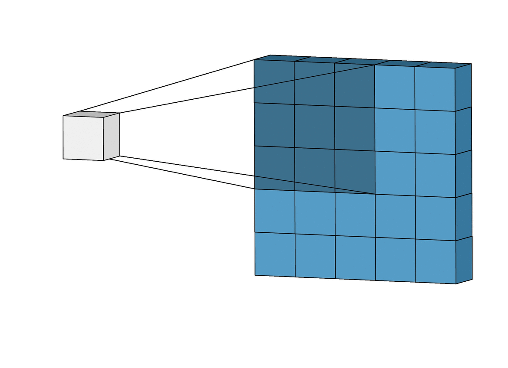
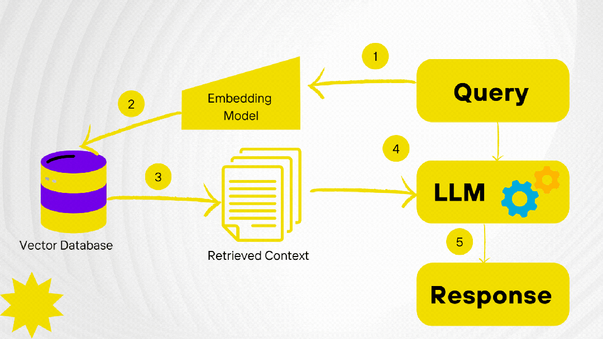
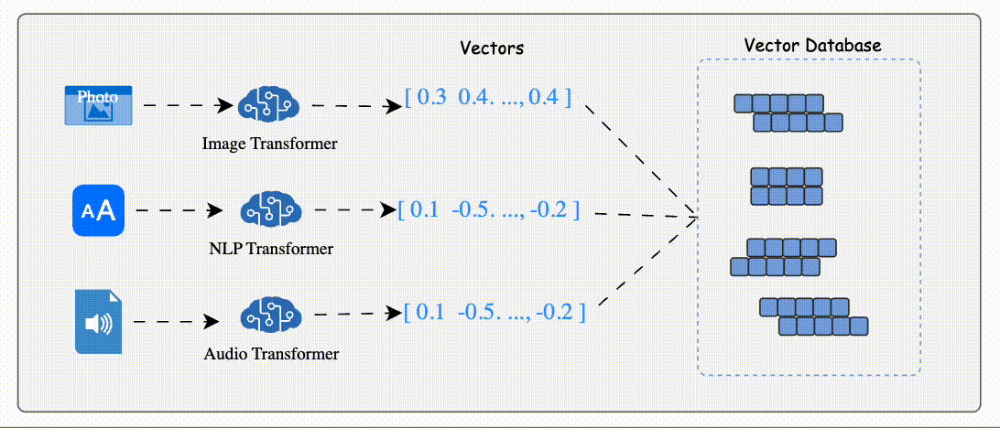
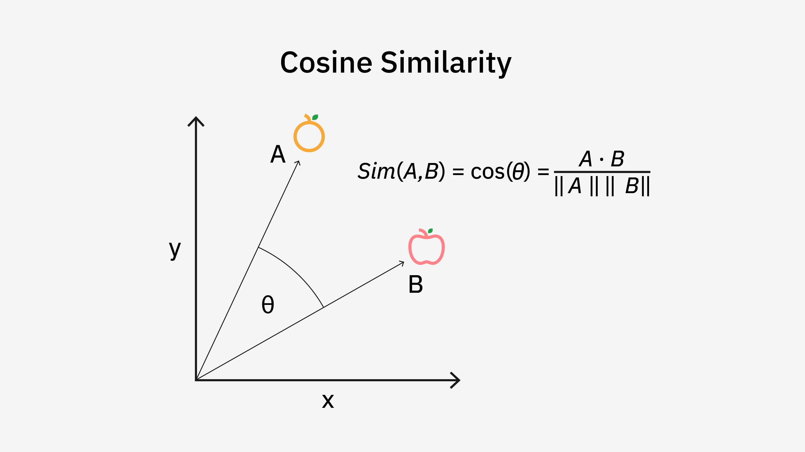
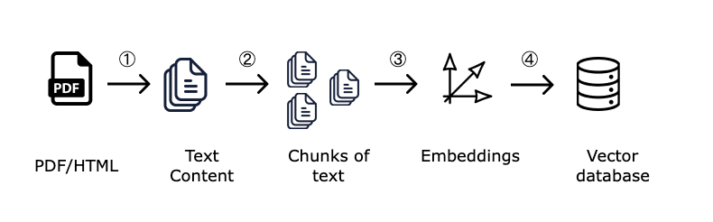
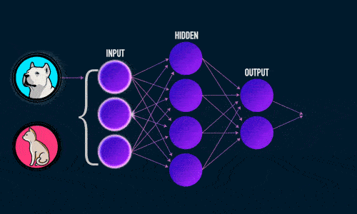

Прикладные инструменты искусственного интеллекта: внедрения и эффекты
Инновации. Технологические разрывы. Велогонки. Пирамида Маслоу. Эффект колеи
Тема 1. Что нам изучать по искусственному интеллекту?
Технологический разрыв (technology gap) — это отставание одной страны или региона от других в развитии и внедрении ключевых технологий.
Почему разрывы возникают:
- Инвестиции в R&D (наука и разработки): США и Китай вкладывают сотни миллиардов долларов в ИИ и смежные технологии, Россия — десятки миллиардов рублей;
-
Доступ к вычислительным ресурсам (чипы, GPU):
США контролируют производство передовых чипов (NVIDIA, AMD,
Intel), Китай пытается догнать, Россия испытывает дефицит из-за
санкций.
Сравнительная характеристика стран по доступу к вычислительным ресурсам (2024–2025 гг.):Критерий 🇺🇸 США 🇨🇳 Китай 🇷🇺 Россия Производство чипов Ведущие фабрики (Intel, TSMC Arizona), контроль оборудования (ASML — под юрисдикцией США) SMIC (14–7 нм), стараются обойти санкции, отставание от США на ~3–5 лет Микрон (90–65 нм), критическое отставание, нет доступа к литографам EUV Доступ к передовым GPU НVIDIA H100 / B200 — свободно, свои ЦОДы НVIDIA H800 (ослабленные), развивают свои (Ascend 910B) Легально недоступны, только через параллельный импорт, одиночные карты Суперкомпьютеры (Top500) Frontier (№1), Aurora — десятки машин в топ-50 Sunway, Tianhe — в топ-10, но данные засекречены Нет в топ-50, самый мощный ~21 Пфлопс против ~1200 у США Санкционные ограничения Инициатор экспортного контроля (BIS) Под санкциями США, но развивает внутреннее производство Жёсткие санкции с 2022 года, все ведущие вендоры ушли Облачные GPU-кластеры AWS, Azure, GCP — тысячи H100 по запросу Alibaba, Tencent, Baidu Cloud (с ограничениями) Yandex Cloud, SberCloud (устаревшие GPU, дефицит) Прогноз отставания от США — ~2–4 года в массовом производстве, ~1–2 года в GPU-доступе ~10–15 лет без снятия санкций 🔍 Примечание: данные на 2025 год, ситуация динамичная из-за геополитики и экспортного контроля США.
- Кадры и их миграция: лучшие AI-специалисты мира работали в США до визовой политики Трампа (выходцы из Китая, Индии, Европы, России);
- Регулирование: Европа «зарегулирована» (EU AI Act), что замедляет внедрение, Китай — минимальные ограничения, США — золотая середина;
- Политическая воля и стратегия: Китай поставил цель «стать мировым лидером в ИИ к 2030 году» ещё в 2017 году.
Эффект велогонки: страна-изобретатель технологии не всегда становится лидером её внедрения (пример: интернет изобрели в США, но Китай построил крупнейшую цифровую экосистему).
Тема 2. Радио и телевидение
Радио (1890–1920-е годы)
- США: 1895 — первые эксперименты Маркони; 1920 — первая коммерческая радиостанция KDKA (Питтсбург). К 1930 году радио есть в 50% домов США.
- Европа: Великобритания (BBC, 1922), Германия, Франция — массовое радиовещание с середины 1920-х.
- Россия/СССР: 1919 — первая радиолаборатория в Нижнем Новгороде; 1924 — регулярное вещание. Массовое распространение — 1930-е (к 1940 году — 5 млн радиоточек).
- Китай: первые радиостанции в Шанхае (1923, под контролем иностранцев); массовое радиовещание — после 1949 года.
Телевидение (1930–1960-е годы)
- США: 1939 — NBC начинает вещание с Всемирной выставки; к 1955 году ТВ есть в 65% домов.
- Европа (Великобритания): 1936 — BBC начинает регулярное вещание (первым в мире). После войны (1950-е) — массовое распространение.
- Россия/СССР: 1939 — первые опыты; 1960-е — запуск Останкинской башни (1967), к 1970-м телевидение охватывает почти всё население.
- Китай: 1958 — первая ТВ-станция CCTV; массовое распространение — 1980-е годы (отставание ~20 лет от США).
Тема 3. Компьютеры и интернет
Персональные компьютеры (1970–1990-е)
- США: 1975 — Altair 8800; 1977 — Apple II; 1981 — IBM PC. К 1990 году ПК есть в 30% домов США.
- Европа: отставание на 3–5 лет. Британский ZX Spectrum (1982) — массовый домашний ПК.
- Россия/СССР: серийные ПК — с 1980-х (Агат, БК-0010). Массовое распространение — только с 1990-х (после распада СССР).
- Китай: 1980-е — первые клоны; массовое внедрение ПК — конец 1990-х, когда стоимость упала. Сейчас — крупнейший рынок ПК в мире.
Интернет (1990–2010-е)
- США: 1969 — ARPANET; 1991 — World Wide Web открыт для публики. К 2000 году интернет есть в 43% домов США.
- Европа: отставание 2–3 года. Германия, Франция, Великобритания — массовый интернет с середины 1990-х.
- Россия: 1994 — первый провайдер (Реликом); массовый широкополосный интернет — с середины 2000-х.
- Китай: 1994 — подключение к интернету; массовое распространение — с 2000-х. Сегодня — 1 млрд+ пользователей, но с «Великим китайским файрволом».
Тема 4. Соцсети и маркетплейсы
Социальные сети (2000–2010-е)
- США: 2004 — Facebook; 2006 — Twitter; 2010 — Instagram. К 2015 году 70% взрослых в США пользуются соцсетями.
- Европа: те же платформы с небольшим отставанием по времени внедрения.
- Россия: 2006 — ВКонтакте (собственная соцсеть); Одноклассники (2006). Популярность с 2008–2010 годов. Telegram (2013) — до 2025 основная платформа.
- Китай: WeChat (2011) — не просто соцсеть, а «супер-приложение» (мессенджер, платежи, заказ еды, госуслуги). Фактически создал собственную, изолированную цифровую экосистему.
Маркетплейсы (2000–2020-е)
- США: 1995 — eBay; 1998 — Amazon (как книжный магазин, затем — маркетплейс). Доминируют до сих пор.
- Китай: Alibaba (Taobao, Tmall) — основан в 1999, с 2010-х крупнейший в мире по объёму продаж. Китайский рынок e-commerce крупнее американского с 2016 года.
- Россия: 2000-е — первые маркетплейсы (Ozon с 1998, но массово — с 2010-х); Wildberries (2004). Бурный рост — 2018–2024 годы. Отставание от Китая и США ~10 лет.
Тема 5. Автомобили: классика vs электромобили
Классические автомобили (1880–1970-е)
- Европа (Германия): 1886 — Карл Бенц (первый автомобиль с ДВС). До Второй мировой — лидеры.
- США: 1908 — Ford Model T (конвейер Генри Форда). К 1920-м — крупнейший автопроизводитель в мире.
- Россия/СССР: 1930-е — ГАЗ и ЗИС (копирование технологий Ford). Массовое производство, но отставание по качеству и инновациям.
- Китай: 1950-е — первые заводы (советская помощь); массовое автопроизводство — с 1990-х как мировая фабрика.
Электромобили (2000–2020-е) — смена лидерства
- США (Tesla): 2008 — Roadster; 2012 — Model S. К 2020-м — лидер по технологиям и стоимости капитализации.
- Китай (BYD): 2022–2024 — обогнал Tesla по объёму продаж электромобилей. BYD стал крупнейшим производителем EV в мире.
- Европа: Volkswagen (ID. серия) и другие пытаются догнать, но отстают. Жёсткие экологические стандарты стимулируют, но не догоняют Tesla и BYD.
- Россия: электромобили — нишевый сегмент (отсутствие зарядной инфраструктуры, холодный климат). Массового внедрения нет.
Тема 6. Генеративный ИИ (ChatGPT и аналоги): кто лидирует в 2025–2026
США — абсолютный лидер (OpenAI, Google, Anthropic, xAI)
- 30 ноября 2022 года — запуск ChatGPT. Дата, после которой ИИ стал массовым.
- GPT-4, GPT-5, Gemini, Claude, Grok — все флагманские модели из США.
- По глобальному индексу ИИ 2023–2024: США — 1 место.
Китай — догоняющий, с амбициями
- DeepSeek (2025) — китайская модель, ненадолго обогнала ChatGPT в американском App Store.
- Алибаба (Tongyi Qianwen), Baidu (Ernie Bot), Tencent (Hunyuan) — собственные LLM.
- По глобальному индексу ИИ — 2 место. Государственная стратегия — к 2030 году стать лидером.
Европа — регулятор, но не производитель
- Нет собственного ИИ-гиганта масштаба OpenAI или Google.
- Европейские стартапы жалуются, что бюрократия (EU AI Act) тормозит развитие, таланты уезжают в США.
- По внедрению ИИ среди населения — лидеры (Норвегия, Ирландия, Франция — 40–46%), но технологии — американские.
Россия — на периферии
- YandexGPT, GigaChat (Сбер) — качественные модели для русского языка, но глобального масштаба нет.
- По глобальному индексу ИИ (2023) — 30 место.
- Санкции — ограничение доступа к передовым чипам NVIDIA, утечка кадров.
- Внедрение ИИ среди взрослого населения — 7.6% (в ОАЭ — 64%, в США — 28.3%).
Тема 7. Беспилотные автомобили: Waymo (США) vs Baidu (Китай)
США — технологический лидер
- Waymo (Google) — первая компания, запустившая коммерческое беспилотное такси (Финикс, 2018; Сан-Франциско, Лос-Анджелес, Остин).
- Tesla — автопилот FSD (Full Self-Driving) с 2020 года в бета-версии.
- Крупнейшие инвестиции, самый большой пробег беспилотников.
Китай — агрессивно догоняет
- Baidu Apollo — беспилотные такси в Пекине, Шанхае, Шэньчжэне (с 2022 года).
- Государственная поддержка — миллиардные инвестиции, менее строгое регулирование, чем в США и Европе.
- Цель Китая — стать мировым лидером в беспилотном транспорте.
Европа — консервативный подход
- Mercedes-Benz Drive Pilot (2022) — первый сертифицированный автопилот 3 уровня (водитель может отвлекаться).
- Жёсткие правила безопасности и фрагментированный рынок (разные законы в разных странах) замедляют внедрение.
Россия
- Яндекс.Беспилот — тесты в Москве, Иннополисе; коммерческого запуска такси пока нет.
- Инфраструктурные и регуляторные ограничения, климат.
Тема 8. Распознавание лиц и компьютерное зрение: Китай обошёл всех
Парадоксальный разрыв: Китай отставал в фундаментальной науке об ИИ, но стал мировым лидером по внедрению систем распознавания лиц.
Китай — абсолютный лидер по масштабу внедрения
- Системы распознавания лиц работают в метро, на вокзалах, в торговых центрах, на улицах.
- Камеры с ИИ-аналитикой следят за порядком (вызывает беспокойство у правозащитников, но китайское общество в целом спокойно относится к наблюдению).
- Minimal ограничения на сбор данных — колоссальное технологическое преимущество.
США — технологический лидер, но не внедренческий
- Clearview AI, Amazon Rekognition — технологии высокого качества.
- Полицейские департаменты используют, но общественный резонанс и законы ограничивают (отмена или моратории на использование).
Европа — самые строгие ограничения
- GDPR (Общий регламент по защите данных) и EU AI Act фактически запрещают массовое использование биометрии в общественных местах.
Россия
- «Умный город», видеонаблюдение в Москве с распознаванием лиц (система «Орёл»).
- Законодательство менее строгое, чем в Европе, но масштаб внедрения существенно меньше китайского.
Тема 9. Полупроводники и чипы: самый критический технологический разрыв
Микрочипы (процессоры, GPU, память) — основа всех цифровых технологий и ИИ. Здесь разрыв огромен и структурирован иначе.
США — дизайн и литография
- NVIDIA, AMD, Intel, Qualcomm — создают лучшую в мире архитектуру (глобальное доминирование в разработке).
- Но производят в основном в Тайване и Южной Корее (TSMC, Samsung).
Тайвань (TSMC) и Южная Корея (Samsung) — производственное лидерство
- TSMC производит ~90% всех самых передовых чипов в мире (3 нм, 2 нм техпроцессы).
- Это самое слабое место США и Запада в целом — зависимость от Тайваня.
Китай — пытается догнать под санкциями
- SMIC — китайский производитель, отстаёт от TSMC на 3–5 поколений (14 нм против 3 нм у TSMC).
- Санкции США ограничивают доступ к голландским литографическим машинам ASML (нужны для производства современных чипов).
- Государственные инвестиции — сотни миллиардов долларов на ликвидацию разрыва.
Россия
- Советская микроэлектроника была конкурентоспособной в 1980-е, но после распада СССР разрыв стал колоссальным.
- Микрон и другие — техпроцессы 65–180 нм (отставание от мировых лидеров на 15–20 лет).
- Санкции 2022 года дополнительно ограничили доступ к импортным чипам.
- Это критически ограничивает развитие и внедрение ИИ в России.
Тема 10. Внедрение ИИ среди населения (2025): удивительные лидеры
Самые высокие показатели внедрения ИИ — не в США и не в Китае!
По данным Microsoft Global AI Adoption in 2025 (опрошено 147 стран):
Топ-5 стран по доле населения, использующей ИИ-инструменты:
- 1. ОАЭ — 64.0% (государственная стратегия развития ИИ с 2017 года, создано Министерство искусственного интеллекта)
- 2. Сингапур — 60.9% (ранние инвестиции в инфраструктуру и исследования)
- 3. Норвегия — 46.4% (лидер в Европе по цифровизации)
- 4. Ирландия — 44.6%
- 5. Франция — 44.0%
Позиции ключевых стран:
- США — 28.3% (24 место в мире)
- Китай — точных данных по доле населения нет, но индекс внедрения в целом высокий благодаря господдержке
- Россия — 7.6%
Вывод: маленькие и богатые страны (ОАЭ, Сингапур, Норвегия) могут внедрять ИИ быстрее гигантов, потому что способны быстро принимать решения и не тонут в бюрократии.
Тема 11. Россия в глобальной ИИ-гонке
Российское ИИ-наследие: советская школа кибернетики, математики, алгоритмов — одна из лучших в мире.
Сильные стороны:
- YandexGPT, GigaChat — качественные модели для русского языка, технически конкурентоспособны.
- Компьютерное зрение, распознавание речи, «умные города» (Москва) — точечные успехи.
- Государственная стратегия развития ИИ до 2030 года, финансирование (федеральный проект «Искусственный интеллект» — 32.1 млрд руб. на 2021–2024).
- По элементу «государственная поддержка» в глобальном индексе ИИ Россия занимала 7 место в 2023 году.
- Специалисты с высшим образованием
Слабые стороны (почему разрыв растёт):
- Санкции (2022+): ограничен доступ к передовым чипам NVIDIA (необходимы для обучения больших моделей); утечка кадров («айтишная эмиграция»).
- Отсутствие собственных LLM глобального масштаба: YandexGPT и GigaChat — региональные игроки, а не конкуренты GPT-4/5.
- Малое внедрение среди населения: 7.6% пользователей ИИ-инструментов (в ОАЭ — 64%).
- По глобальному индексу ИИ (Tortoise Media) Россия упала с 22 места в 2022 году до 30 места в 2023 году.
- Платежеспособный спрос населения Госсектор vs частный сектор
Тема 12 Почему в странах старого капитализма медленно внедряется e-government?
Парадокс: США, Германия, Япония и Великобритания — родина интернета, программируемого компьютера и современных цифровых технологий. Однако в рейтингах цифрового правительства они не являются лидерами, уступая Эстонии, Сингапуру, Южной Корее и даже Саудовской Аравии. Почему так происходит?
- 1. Устаревшая ИТ-инфраструктура (Legacy Systems): правительства десятилетиями эксплуатируют системы, написанные на COBOL и ассемблере. В США 8 из 11 критически важных legacy-систем используют устаревшие языки, а 7 имеют известные уязвимости кибербезопасности. Бюджет на ИТ — более $100 млрд в год, но 80% тратится на поддержание старья, а не на инновации.
- 2. Федерализм и «институциональная инфляция»: В Германии, США и других федеративных странах ответственность за цифровизацию распределена между центром, землями/штатами и муниципалитетами. В Германии это привело к тому, что каждый город ищет собственное решение для процессов, которые должны быть едиными по всей стране (например, регистрация автомобиля). Исследователи называют это «институциональной инфляцией» — все что-то делают, но в своих «силосных башнях», без совместимости решений.
- 3. Культурные барьеры и сопротивление бюрократии: В Германии 77% компаний всё ещё используют факс — в основном для общения с госорганами. При переезде нужно лично явиться в мэрию с бумажными формами. Две трети немцев не видят прогресса в сокращении бюрократии, несмотря на обещания правительства. Айтишники шутят: «В Германии даже здоровье могут прислать по факсу».
- 4. Опасения по поводу безопасности и приватности: Ещё в начале 2000-х исследователи называли приватность, страх перед затратами и сложность миграции с legacy-систем главными препятствиями. В Германии 85% граждан опасались за безопасность госсайтов, и этот культурный скепсис сохраняется до сих пор. В США действуют строгие требования по защите данных, что замедляет внедрение облачных и AI-решений.
📊 Сравнительная таблица: как «старый капитализм» отстаёт от лидеров
| Критерий | 🇺🇸 США | 🇩🇪 Германия | 🇬🇧 Великобритания | 🇯🇵 Япония | 🏆 Лидеры (Эстония/Сингапур) |
|---|---|---|---|---|---|
| UN E-Government Index (EGDI 2024) | ～Топ-20 | 24-е место в ЕС (CapGemini) | ～Топ-15 | ～Топ-20 | Топ-5 (Эстония, Сингапур, ЮК) |
| Главная проблема | Legacy-системы, COBOL, $100 млрд бюджета → 80% на поддержку |
Факсы, бумага, федерализм 77% компаний используют факс |
Brexit, фрагментация данных | Стареющее население, бумажный документооборот |
Управляемая цифровизация с нуля |
| Доля онлайн-услуг | Оценки разнятся, много частичных решений |
Дюссельдорф (передовой город): 120 из 580 услуг (～20%) |
Gov.uk — единый портал, но глубина хромает |
MyNa portal, но низкий охват пожилых |
>99% услуг онлайн (Эстония: включая e-голосование) |
| Бюрократический барьер | Высокий — регуляторика, согласования с уровнями |
Критический 66% граждан не видят прогресса |
Средний, но есть драйверы |
Высокий — иерархия, печати, согласования |
Низкий — «цифра по умолчанию» |
| Возраст населения | Средний, цифровой разрыв есть |
Очень старое цифровой скепсис |
Средний |
Самое старое цифровая отчуждённость |
Молодое / цифровое поколение |
💡 Ключевой вывод:
Страны старого капитализма столкнулись с «ловушкой наследия» (legacy trap): их ИТ-системы создавались десятилетиями, они крайне дороги в поддержке и не предназначены для интернета. Полная замена требует гигантских инвестиций, риска сбоев и политической воли. Кроме того, федерализм и культурный скепсис в отношении цифровых технологий замедляют любые централизованные инициативы. В итоге страны, которые начинали с нуля в 1990-е (Эстония) или провели «цифровую революцию» (Сингапур, Южная Корея), далеко обогнали «старых капиталистов».
📈 А что с программой Online Access Act (OAA) в
Германии?
В 2017 году Германия приняла амбициозный закон: к концу 2022 года
оцифровать 575 госуслуг. К 2023 году было готово лишь
105 услуг (18.3%) — и это при том, что закон
считался «поворотным моментом». Причина: организация «центральный
контроль + децентрализованное исполнение» не сработала в немецкой
бюрократической среде.
Методы интеллектуального анализа данных

Тема 1. Свёрточные нейронные сети (CNN) для распознавания лиц
Свёрточные нейронные сети (CNN) – класс глубоких нейронных сетей, наиболее эффективный для анализа визуальных данных (фото, видео). В государственных системах видеонаблюдения CNN используются для:
- распознавания лиц в толпе;
- поиска подозрительных объектов;
- идентификации граждан по камерам
Ядро “скользит” над двумерным изображением, поэлементно выполняя операцию умножения с той частью входных
данных, над которой оно сейчас находится, и затем суммирует все полученные значения в один выходной пиксель.
Ядро повторяет эту процедуру с каждой локацией, над которой оно “скользит”, преобразуя двумерную матрицу
в другую все еще двумерную матрицу признаков.
Признаки на выходе являются взвешенными суммами (где веса являются значениями самого ядра) признаков на
входе, расположенных примерно в том же месте, что и выходной пиксель на входном слое
Почему CNN лучше других методов? Деревья решений
и k-ближайшие соседи не справляются с вариативностью освещения,
поз и мимики. Свёрточные слои автоматически выделяют значимые
признаки (края, углы, текстуры) и обеспечивают высокую точность
даже при шуме.
Пример в госорганах: система «Орёл» (разработка НЦРЛ) использует CNN для поиска преступников в потоке видео с городских камер.
Тема 2. Генеративные модели (GPT) в госуслугах
Генеративные модели (например, GPT, YandexGPT, GigaChat) создают новый текст, изображения или код на основе обучающих данных. В государственном секторе их главное преимущество — автоматизация рутинных операций:
- составление ответов на типовые запросы граждан;
- формирование черновиков служебных писем и протоколов;
- резюмирование длинных жалоб и обращений.
Важно: генеративные модели не заменяют чиновников, не хранят конфиденциальные данные и не принимают окончательных решений. Их задача — снизить нагрузку на сотрудника, предложив готовый текст для проверки.
Пример: на портале «Госуслуги» чат-бот на базе генеративной ИИ помогает заполнить заявление на загранпаспорт, подсказывая недостающие данные.
Тема 3. Прогнозирование нагрузки на call-центр: временные ряды (ARIMA, LSTM)
Временные ряды – это последовательность данных, упорядоченная во времени (например, количество звонков по часам). Для прогнозирования нагрузки на государственный call-центр используют:
- ARIMA (AutoRegressive Integrated Moving Average) — классический статистический метод для линейных трендов и сезонности;
- LSTM (Long Short-Term Memory) — тип рекуррентной нейронной сети, который улавливает долгосрочные зависимости в потоках вызовов.
Метод опорных векторов (SVM) и k-средних не подходят, так как не учитывают порядок наблюдений во времени. Точный прогноз позволяет планировать количество операторов и избегать очередеь.
Пример: МФЦ одного из регионов использует LSTM для предсказания пиковых часов записи и динамического открытия дополнительных окон.
Тема 4. Обработка естественного языка (NLP) и тематическое моделирование жалоб
NLP (Natural Language Processing) — область ИИ, которая позволяет компьютерам понимать и генерировать человеческий язык. В госорганах методы NLP применяются для:
- классификации обращений граждан по тематике (налоги, ЖКХ, соцзащита) — вопрос теста;
- тематического моделирования (LDA, NMF) больших массивов неструктурированных текстов жалоб — вопрос теста.
LDA (Latent Dirichlet Allocation) автоматически находит скрытые темы в документах без ручной разметки. Это позволяет выявить самые частые проблемы граждан и распределить их по ответственным ведомствам.
Пример: «Инцидент Менеджмент» в соцсетях — система мониторит жалобы в VK и с помощью NLP отправляет их в профильные госорганы.
Тема 5. Безопасность и ПДн: выявление аномалий + ФЗ-152
Выявление аномалий (Anomaly Detection) — метод ИИ, который находит нетипичное поведение в сетевом трафике, доступе к базам данных или действиях пользователей. Это ключевая технология для мониторинга угроз безопасности (вопрос №10).
Обработка персональных данных (ПДн) в госуслугах критически важна. ИИ-системы обязаны соблюдать ФЗ-152 «О персональных данных» и применять анонимизацию (удаление или шифрование идентификаторов: ФИО, СНИЛС, адреса) перед обучением моделей (вопрос №6).
Запрещено: хранить ПДн на зарубежных серверах, отказываться от шифрования, передавать данные третьим лицам без согласия.
Пример: система антифрода в ФНС выявляет аномальные попытки доступа к декларациям и блокирует подозрительный IP.
Тема 6. Визуализация и цифровые ассистенты в документообороте
Интерактивные дашборды (Tableau, Power BI, Yandex DataLens) — это технология визуализации данных для принятия управленческих решений (вопрос №5). Госслужащий может видеть ключевые KPI в реальном времени: количество обращений, сроки ответов, бюджетные расходы.
Цифровые ассистенты в документообороте выполняют следующие функции (вопрос №8):
- проверяют корректность заполнения форм (реквизиты, ИНН, даты);
- ищут логические ошибки и противоречия;
- напоминают о сроках согласования.
Ассистент не подписывает документы, не удаляет их и не меняет содержание по своему усмотрению — юридически значимые решения остаются за человеком.
Пример: «Помощник ЭЛД» в системах электронного документооборота госорганов проверяет, что справка содержит все необходимые подписи и печати.
Тема 7. Токен
Единица текста для языковой модели
Определение: Токен — это минимальная значимая единица текста, которую обрабатывает большая языковая модель (LLM) за один шаг. Это может быть часть слова, целое слово, знак препинания или пробел.
Как это работает: Модель не видит буквы по отдельности. Она разбивает текст на токены по специальному словарю. Например, слово «привет» — 1 токен, а слово «искусственный» может быть разбито на 2-3 токена.
Пример: Фраза «Привет, как дела?» → 5 токенов: «Привет» + «,» + « как» + « дела» + «?»
Тема 8. Вектор / Эмбеддинг
Числовое представление смысла
Определение: Вектор (или эмбеддинг) — это набор чисел (обычно от сотен до тысяч), который представляет смысл текста, изображения или любого другого объекта. Похожие по смыслу объекты получают близкие векторы.
Как это работает: Специальная модель-энкодер (например, BERT, text-embedding-3) превращает текст в набор чисел. В многомерном пространстве «смыслов» близкие понятия оказываются рядом.
Пример: Вектор слова «кот» и вектор слова «кошка» будут очень близки. А вектор «автомобиль» — далеко от них. Это позволяет искать по смыслу, а не по точному совпадению слов.

Тема 10. RAG (Retrieval-Augmented Generation)
Поиск + генерация = точные ответы
Определение: RAG — это подход, при котором перед генерацией ответа языковая модель сначала ищет релевантную информацию в вашей базе знаний (документах, инструкциях, законах), а затем отвечает, опираясь на найденные факты.
Как работает RAG (3 шага):
- Поиск: Ваш вопрос превращается в вектор и ищет похожие кусочки документов в векторной базе.
- Контекст: Найденные кусочки добавляются в промпт как контекст.
- Генерация: LLM даёт ответ, основываясь ТОЛЬКО на предоставленном контексте.
Пример в госорганах: Вы спрашиваете чат-бота: «Как оформить загранпаспорт?» RAG ищет актуальный регламент на сайте госуслуг, читает его и отвечает, ссылаясь на конкретный пункт инструкции.

Тема 11. Векторная база данных
Хранилище для быстрого поиска по смыслу
Определение: Векторная БД — это специализированное хранилище, которое умеет быстро находить векторы, похожие на ваш запрос. Примеры: Chroma, FAISS, Qdrant, Pinecone, Milvus.
Как это работает: Обычная SQL-БД ищет точные совпадения (WHERE name = "Иванов"). Векторная БД ищет похожие по смыслу (косинусное сходство) среди миллионов векторов за доли секунды.
Пример: Векторная БД хранит 10 миллионов эмбеддингов всех документов госоргана. Вы ищете «налоговые вычеты на детей» — БД возвращает 5 самых релевантных кусочков документов, даже если слова «налог» и «вычет» там не встречаются.

Тема 12. Косинусное сходство (Cosine Similarity)
Как измерить похожесть текстов
Определение: Косинусное сходство — это метрика, которая измеряет угол между двумя векторами. Значение от 0 (совсем не похожи) до 1 (очень похожи).
Почему это важно: В отличие от евклидова расстояния, косинусное сходство игнорирует длину вектора. Короткий текст может быть очень похож на длинный по смыслу, даже если слов меньше.
Пример: Фразы «кошка спит на диване» и «кот отдыхает на софе» будут иметь косинусное сходство ~0.95, хотя слова разные. А «кошка спит на диване» и «я люблю пиццу» — ~0.1.

Тема 13. Чанкинг (Chunking)
Нарезка документов на кусочки
Определение: Чанкинг — это процесс разбиения большого документа на небольшие фрагменты (чанки) перед тем, как загружать их в векторную базу данных.
Зачем это нужно: У LLM ограниченное контекстное окно (сколько токенов можно подать за раз). Если скормить весь документ сразу (100 страниц), модель не поместит его в память. Чанкинг решает эту проблему.
Как правильно нарезать: Чанки делают по 500–1500 токенов с перекрытием (overlap) 10–20%, чтобы не потерять смысл на границах. Лучше резать по границам абзацев или предложений.
Пример: Закон на 100 страниц нарезается на 300 чанков по полстраницы. Когда пользователь спрашивает «Что такое налоговый вычет?», RAG находит нужные 2–3 чанка и подаёт их модели.
Тема 14. Галлюцинации (Hallucinations)
Когда модель уверенно врёт
Определение: Галлюцинация — это ситуация, когда языковая модель генерирует информацию, которая звучит правдоподобно, но не соответствует действительности или отсутствует в предоставленном контексте.
Почему это происходит: LLM обучены предсказывать следующее слово, а не проверять факты. Если модель не знает ответа, она «додумывает» наиболее вероятное продолжение, даже если оно неверное.
Пример галлюцинации: Вы спрашиваете: «Какой документ нужен для вычета?» Модель отвечает: «Нужно заполнить форму КНД-1151080» — но такой формы не существует. Звучит убедительно, но это ложь.
Тема 15. Гибридный поиск (Hybrid Search)
Смысл + ключевые слова
Определение: Гибридный поиск — это объединение двух методов поиска: векторного (по смыслу) и полнотекстового (по ключевым словам, BM25). Результаты объединяются через алгоритм RRF (Reciprocal Rank Fusion).
Зачем это нужно: Векторный поиск отлично находит синонимы («автомобиль» → «машина»), но может пропустить точный термин («ИНН»). Полнотекстовый поиск находит точное совпадение, но не понимает смысл. Вместе — сила.
Пример: Пользователь ищет «ст. 137 УК РФ». Векторный поиск может найти другие статьи о нарушении тайны переписки, а полнотекстовый найдёт именно эту статью. Гибрид выдаст оба результата.
Тема 16. Переранжирование (Reranking)
Точная сортировка релевантных результатов
Определение: Переранжирование — это этап после первоначального поиска, на котором более точная (и медленная) модель заново оценивает релевантность каждого кандидата и пересортировывает их.
Как это работает: Сначала быстрый поиск (ANN) находит 50–100 кандидатов. Затем reranker (кросс-энкодер) попарно оценивает «запрос-документ» и оставляет топ-5–10 самых релевантных чанков.
Пример: Вы ищете «налог на имущество физических лиц». Быстрый поиск нашёл 50 чанков, среди них есть и про машины, и про квартиры. Reranker поднимает вверх те чанки, где речь именно о налоге для физлиц.
Тема 17. Контекстное окно (Context Window)
Максимум токенов за один вызов
Определение: Контекстное окно — это максимальное количество токенов, которое языковая модель может обработать (вход + выход) за один вызов.
Что входит в окно: Системный промпт + найденные RAG-чанки + история диалога + запрос пользователя + генерируемый ответ.
Примеры размеров: GPT-3.5 — 4K токенов, GPT-4 — 8K/32K, GPT-4 Turbo — 128K, Gemini 1.5 Pro — до 2M токенов.
Проблема «середины» (lost-in-middle): Модель лучше помнит начало и конец контекста, а информацию из середины может игнорировать. Поэтому важные чанки кладут в начало и конец промпта.
Автоматизация государственных услуг с помощью генеративных ИИ-технологий

Тема 1. Что такое генеративные ИИ-модели и как они работают
Генеративные модели — это класс нейросетей, которые не просто классифицируют или предсказывают, а создают новый контент: текст, изображения, код, аудио. В основе лежат архитектуры Transformer (GPT, BERT, T5) и диффузионные модели.
Как обучаются? На огромных массивах данных (книги, сайты, законы) модель учится предсказывать следующее слово или восстанавливать зашумлённый фрагмент. В результате она «понимает» грамматику, стиль и логику текста.
Применение в госуслугах:
- генерация ответов на обращения граждан;
- составление черновиков нормативных документов;
- перевод служебной документации на языки народов РФ;
- адаптация текстов законов для простого чтения (plain language).
Пример: МФЦ тестирует локального помощника на базе GPT для консультирования по перечню документов на разные услуги.
Тема 2. Чат-боты и голосовые ассистенты на госуслугах
Чат-бот на генеративной ИИ — это система, которая понимает свободные вопросы гражданина и даёт связные, релевантные ответы. Отличие от старых ботов (по ключевым словам):
- не требует точных формулировок — «как мне поменять паспорт?» и «замена удостоверения личности» обработаются одинаково;
- может вести диалог, уточнять данные, задавать встречные вопросы;
- генерирует готовые заявления, жалобы, запросы.
Голосовой ассистент добавляет синтез и распознавание речи (Speech-to-Text + Text-to-Speech), что удобно для граждан с низкой цифровой грамотностью.
Ограничения: бот не принимает юридических решений, не выдаёт справки с печатью, всегда предлагает обратиться к специалисту при сложных случаях.
Пример: робот Макс на портале «Госуслуги» объясняет, как получить вычет на лечение, и формирует черновик заявления.
Тема 3. NLP-классификация обращений граждан по тематике
Классификация текстов — задача NLP, где модель относит обращение к одной или нескольким категориям: ЖКХ, соцзащита, налоги, миграция и т.д. В госорганах это критически важно для маршрутизации.
Методы:
- классический ML: TF-IDF + логистическая регрессия или SVM;
- современные: fine-tuned BERT, RuBERT, Naive Bayes с эмбеддингами.
Процесс: обращение поступает → модель определяет тему → автоматически назначает ответственное ведомство → ставит приоритет (срочное/обычное).
Выгода: снижение времени на ручную сортировку с 15 минут до 2 секунд, уменьшение ошибок переадресации.
Пример: система «Обращения граждан» в Москве автоматически распределяет 100 000+ сообщений в месяц по 50+ тематикам с точностью 94%.
Тема 4. Тематическое моделирование (LDA, NMF) для анализа жалоб
Тематическое моделирование — это неконтролируемый метод, который находит скрытые «темы» в большом массиве текстов без разметки. Идеален для анализа неструктурированных данных, когда непонятно, на какие группы делить жалобы.
Алгоритмы:
- LDA (Latent Dirichlet Allocation) — вероятностная модель, считающая, что каждый документ состоит из смеси тем, а каждая тема — из набора слов;
- NMF (Non-negative Matrix Factorization) — линейно-алгебраический метод, часто даёт более интерпретируемые темы.
Результат для госоргана: видно, что чаще всего жалуются на вывоз мусора (тема «отходы») или на очереди в МФЦ (тема «доступность услуг»). Управленческие решения принимаются на основе этих данных.
Пример: Роспотребнадзор проанализировал 50 тыс. жалоб через LDA и выявил новую тему «шум от вентиляции в новостройках» — после этого были внесены изменения в СНиП.
Тема 5. Цифровые ассистенты в документообороте госорганов
Цифровой ассистент (Copilot для чиновника) — это ИИ-инструмент, встроенный в систему электронного документооборота (СЭД). Он помогает сотруднику, но не заменяет его.
Что делает ассистент:
- ✅ проверяет реквизиты (ИНН, ОГРН, даты, номера приказов);
- ✅ ищет орфографические и пунктуационные ошибки;
- ✅ находит противоречия между разными документами («в письме от 10 мая указана сумма 100 тыс., а в приложении — 200 тыс.»);
- ✅ напоминает о сроках согласования и исполнителях;
- ✅ предлагает шаблоны резолюций по типовым ситуациям.
Что ассистент НЕ делает: не подписывает документы, не утверждает, не удаляет, не меняет содержание произвольно. Юридическая ответственность — за человеком.
Пример: «Ассистент ЕСИА» проверяет, что в заявке на доступ к базе данных заполнены все поля и приложен скан согласия руководителя.
Тема 6. ИИ для профессионального развития госслужащих
Генеративный ИИ и рекомендательные системы могут кардинально улучшить обучение сотрудников государственных органов.
Как это работает:
- анализируются результаты тестов, выполненные задания, скорость чтения документов;
- строится модель компетенций (что сотрудник знает хорошо, а где пробелы);
- ИИ формирует персонализированную образовательную траекторию — подборку курсов, статей, вебинаров именно по слабым местам;
- генеративные модели создают практические кейсы и тесты под уровень сотрудника.
Что не делает ИИ: автоматически не повышает в должности, не присваивает чины, не заменяет аттестационную комиссию.
Пример: в системе «Электронный университет» госслужащему, который ошибается в вопросах по антикоррупции, ИИ предлагает специальный модуль с кейсами и только потом новое тестирование.
Тема 7. Интерактивные дашборды для управления (Tableau, Power BI)
Дашборд (панель управления) — это визуальное представление ключевых показателей в реальном времени. В отличие от статичных отчётов в Excel, дашборды интерактивны: можно фильтровать, детализировать, смотреть тренды.
Популярные инструменты в госорганах:
- Power BI (лицензии доступны по госзакупкам);
- Tableau;
- Yandex DataLens (российский аналог);
- Apache Superset (open-source).
Примеры показателей на дашборде: количество обращений граждан, среднее время ответа, распределение по темам, загруженность сотрудников, исполнение бюджета.
Руководитель видит «красные зоны» (например, рост жалоб по ЖКХ в одном районе) и принимает управленческое решение: направить проверку или увеличить штат.
Пример: дашборд Минцифры показывает онлайн-транзакции по госуслугам с географической привязкой к регионам.
Тема 8. Анонимизация персональных данных (ФЗ-152) при обучении ИИ
Для обучения генеративных моделей (и любых других ИИ) на реальных данных граждан необходимо строго соблюдать Федеральный закон №152-ФЗ «О персональных данных».
Ключевые требования:
- получение согласия субъекта на обработку ПДн (кроме случаев, предусмотренных законом);
- определение целей обработки — использовать данные «для повышения качества госуслуг»;
- анонимизация — удаление или шифрование прямых идентификаторов: ФИО, СНИЛС, ИНН, адрес, телефон, email;
- запрет на передачу ПДн зарубежным серверам;
- хранение и обработка в ГИС (государственных информационных системах) с аттестованным уровнем защиты.
Методы анонимизации: маскирование (Иванов → И*****), псевдонимизация (замена на токен), обобщение (год рождения вместо точной даты).
Пример: датасет для обучения модели прогнозирования очередей в МФЦ содержит только возраст (диапазон), пол и тип услуги, но без ФИО и номера паспорта.
Тема 9. Выявление аномалий для кибербезопасности госорганов
Anomaly Detection (выявление аномалий) — метод ИИ, который учится на «нормальном» поведении системы и сигнализирует обо всём, что отклоняется.
Где применяется в госорганах:
- мониторинг сетевого трафика — внезапный всплеск исходящих данных может означать утечку;
- поведение пользователей (UEBA) — госслужащий скачивает 10 000 записей из базы в 3 часа ночи (аномалия);
- нештатные авторизации — вход с необычного IP или в нерабочее время;
- изменение шаблонов запросов к базам данных — возможная атака SQL-инъекцией.
Алгоритмы: изолирующий лес (Isolation Forest), LSTM-автоэнкодеры, методы кластеризации.
Важно: ИИ выдаёт тревогу, но решение о блокировке принимает оператор службы безопасности (человек в контуре).
Пример: система мониторинга ФНС заметила аномальные запросы к базе деклараций и предотвратила атаку хакеров через 4 минуты.
Тема 10. Этические ограничения: почему ИИ не принимает решений в госуслугах
Несмотря на мощность генеративных моделей, в государственном секторе существует принцип «человек в контуре» (Human-in-the-loop).
Что запрещено:
- ❌ автоматический отказ в госуслуге на основе решения ИИ;
- ❌ замена аттестационной комиссии рекомендательной системой;
- ❌ блокировка ресурсов без участия оператора;
- ❌ генерация финальной версии нормативного акта без юриста.
Почему:
- ИИ может ошибаться (галлюцинации, bias);
- отсутствует юридическая ответственность у нейросети;
- нарушаются принципы прозрачности и права на обжалование.
Правильный подход: ИИ готовит черновик, предлагает, предупреждает, но финальное решение всегда за человеком, который проверяет и подписывает.
Пример: в судебной системе ИИ может предложить схожие дела и прецеденты, но приговор выносит только судья.
Тема 11. Прогнозирование нагрузки на call-центры и МФЦ (LSTM, ARIMA)
Генеративные ИИ хороши для текста, но для числовых прогнозов нагрузки используются методы временных рядов — это важно для планирования штата call-центров и МФЦ.
Методы:
- ARIMA (AutoRegressive Integrated Moving Average) — классика, работает хорошо при наличии сезонности (например, наплыв в декабре из-за налоговых деклараций);
- LSTM (Long Short-Term Memory) — рекуррентная нейросеть, которая запоминает долгосрочные паттерны (например, рост обращений после принятия нового закона);
- Prophet от Facebook/Meta — робастен к пропускам и праздникам.
Входные данные: почасовое/подневное количество звонков, сообщений, записей в МФЦ, праздничные дни, погода (влияет на явку).
Результат: оптимизация графиков работы сотрудников, сокращение очередей, экономия бюджета.
Пример: call-центр Пенсионного фонда спрогнозировал рост звонков на 300% в первые три дня после индексации пенсий и заранее увеличил число операторов.
Тема 12. Реальные кейсы: как ИИ уже автоматизирует госуслуги в России
Кейс 1. «Робот Макс» на Госуслугах — голосовой помощник на базе NLP, который проконсультировал более 50 млн граждан. Ответы на 70% типовых вопросов без участия человека.
Кейс 2. Система «Антифрод» в ФНС — выявляет аномалии в налоговых вычетах. За 2023 год предотвращена выплата более 2 млрд рублей мошенникам.
Кейс 3. «Инцидент Менеджмент» — ИИ мониторит соцсети (VK, Telegram, Одноклассники) на предмет жалоб на госорганы, классифицирует их и отправляет в ведомства. Среднее время реакции сократилось с 3 дней до 3 часов.
Кейс 4. Дашборд Минздрава «Управление потоками пациентов» — прогнозирует загрузку поликлиник и перераспределяет талоны.
Общий вывод: ИИ не заменяет госслужащего, а освобождает его от рутины, позволяя сосредоточиться на сложных и нестандартных задачах.
Работа с данными: сбор, анализ, прогнозирование
Тема 1. Жизненный цикл данных в государственном секторе
Жизненный цикл данных (Data Lifecycle) — это последовательность этапов, которые проходят данные от возникновения до удаления. В госорганах этот процесс строго регламентирован.
Основные этапы:
- Сбор (Collection) — поступление данных из форм, заявлений, датчиков, межведомственного взаимодействия;
- Хранение (Storage) — базы данных, озёра данных (Data Lake), ГИС;
- Обработка (Processing) — очистка, нормализация, обогащение;
- Анализ (Analysis) — описательный, диагностический, прогнозный;
- Визуализация (Visualization) — дашборды, отчёты;
- Архивация/Удаление (Archiving/Deletion) — согласно срокам хранения (ФЗ-125).
Особенности госданных: высокая ценность, требования к защите персональных данных, необходимость аудита изменений.
Пример: данные о рождении ребёнка поступают из ЗАГСа → хранятся в ЕГР ЗАГС → обрабатываются для начисления маткапитала → анализируются в Росстате → удаляются через 100 лет.
Тема 2. Источники данных в государственных органах
Данные в госсекторе поступают из множества источников, которые делятся на внутренние и внешние.
Внутренние источники:
- ведомственные информационные системы (ГИС ЖКХ, ЕГРН, ФИС ГИА);
- базы данных обращений граждан;
- системы электронного документооборота (СЭД);
- финансовая и кадровая отчётность.
Внешние источники:
- межведомственное взаимодействие (СМЭВ — система межведомственного электронного взаимодействия);
- открытые данные (data.gov.ru);
- социальные сети и платформы обратной связи;
- данные с датчиков IoT (камеры, счетчики, транспортные системы).
Проблема: данные часто разрознены, имеют разные форматы и качество. Задача аналитика — объединить их в единое пространство.
Пример: для прогноза загруженности метро используются данные турникетов (внутренние), данные о погоде (внешние) и информация о городских событиях (открытые данные).
Тема 3. Структурированные и неструктурированные данные
Структурированные данные — это информация, организованная в чёткую схему (таблицы, строки, столбцы). Легко обрабатываются SQL-запросами.
Примеры: базы данных граждан (ФИО, СНИЛС, дата рождения), налоговые декларации в табличной форме, журналы обращений.
Неструктурированные данные — не имеют заранее заданной модели. Составляют до 80–90% всех данных в госорганах.
Примеры: тексты жалоб и обращений, сканы документов (PDF, JPG), аудиозаписи звонков, видео с камер, электронные письма.
Методы анализа неструктурированных данных:
- NLP (обработка естественного языка) — для текстов;
- Компьютерное зрение (CNN) — для изображений и видео;
- Распознавание речи (ASR) — для аудиозаписей.
Пример: текст жалобы гражданина — неструктурированные данные. С помощью тематического моделирования (LDA) их превращают в структурированную таблицу с колонкой «тема обращения».
Тема 4. Очистка и подготовка данных (Data Cleaning)
Грязные данные (Dirty Data) — это данные с ошибками, пропусками, дубликатами, противоречиями. Если не очистить, то любой анализ и прогноз будут неверными (принцип GIGO — Garbage In, Garbage Out).
Типичные проблемы в госданных:
- ❌ пропущенные значения (пустые поля);
- ❌ дубликаты записей (один гражданин — две строки с разным написанием ФИО);
- ❌ выбросы (возраст 200 лет, сумма налога -1 млн);
- ❌ нестандартные форматы (даты «10.05.23», «2023-05-10», «10 мая 2023»);
- ❌ опечатки («Москва», «Moskwa», «г.Москва»).
Методы очистки: заполнение пропусков (средним, медианой, моделями), удаление дубликатов, нормализация форматов, исправление опечаток через словари.
Инструменты: OpenRefine, Pandas (Python), dbt, а также встроенные средства Power BI/Tableau.
Пример: перед анализом обращений граждан очищают ФИО от лишних пробелов, приводят даты к единому формату и удаляют тестовые обращения.
Тема 5. Виды анализа данных: описательный, диагностический, прогнозный
Четыре уровня анализа данных (от простого к сложному):
1. Описательный анализ (Descriptive Analytics) — «Что произошло?»
- Пример: количество обращений граждан в прошлом месяце = 15 342.
2. Диагностический анализ (Diagnostic Analytics) — «Почему произошло?»
- Пример: рост обращений в декабре связан с рассылкой налоговых уведомлений.
3. Прогнозный анализ (Predictive Analytics) — «Что произойдёт?»
- Пример: в следующем декабре ожидается 18 000 обращений (±5%).
4. Предписывающий анализ (Prescriptive Analytics) — «Что делать?»
- Пример: нужно нанять 10 дополнительных операторов на декабрь.
В госорганах чаще всего используются: описательный (для отчётности) и прогнозный (для планирования ресурсов).
Пример (call-центр): описательный — вчера было 500 звонков; диагностический — пик с 10 до 12 из-за сбоя портала; прогнозный — завтра ожидается 520 звонков.
Тема 6. Временные ряды: ARIMA, LSTM и прогнозирование нагрузки
Временной ряд (Time Series) — это последовательность данных, упорядоченная во времени. Классические примеры в госорганах: количество звонков в call-центр, число поданных заявлений, бюджетные расходы по месяцам.
Ключевые компоненты временного ряда:
- Тренд — долговременное направление (рост, падение, стабильность);
- Сезонность — регулярные колебания (налоговая кампания в декабре, спад летом);
- Шум (остатки) — случайные отклонения.
Методы прогнозирования:
- ARIMA (AutoRegressive Integrated Moving Average) — классический статистический метод. Хорош для рядов с чёткой сезонностью. Требует стационарности.
- LSTM (Long Short-Term Memory) — тип рекуррентной нейронной сети. Умеет запоминать долгосрочные зависимости. Лучше ARIMA при сложных нелинейных паттернах.
- Prophet (от Meta/Facebook) — устойчив к пропускам, учитывает праздники.
Метрики качества: MAE (средняя абсолютная ошибка), RMSE, MAPE.
Пример: спрогнозировали по LSTM, что через 2 недели в МФЦ будет очередь 45 минут, и открыли дополнительное окно.
Тема 7. Кластеризация данных (k-средних) для сегментации граждан
Кластеризация — это метод неконтролируемого обучения, который разбивает данные на группы (кластеры) так, что объекты внутри группы похожи, а между группами — разные.
Алгоритм k-средних (k-means):
- выбираем число кластеров k;
- случайно ставим центры кластеров;
- каждую точку относим к ближайшему центру;
- пересчитываем центры как среднее точек в кластере;
- повторяем до сходимости.
Применение в госорганах:
- сегментация получателей социальных выплат (например, «многодетные семьи», «пенсионеры», «студенты»);
- выделение групп муниципальных образований по уровню развития (бюджет, плотность, инфраструктура);
- кластеризация обращений по схожести тем (дополнение к тематическому моделированию).
Важно: k-средних не используется для прогнозирования временных рядов (это вопрос №3 — там правильный ответ «временные ряды, ARIMA, LSTM»).
Пример: Росстат кластеризует регионы по 10 показателям (ВРП, плотность населения, уровень безработицы) и выделяет 5 типов — от «столичных» до «депрессивных».
Тема 8. Визуализация данных: дашборды для госслужащих
Визуализация данных — это представление информации в графическом виде (графики, карты, диаграммы). Для госорганов критически важно быстро понимать ситуацию.
Интерактивные дашборды — лучшее решение для управления:
- дают ответ на вопрос «Что происходит сейчас?» за 5 секунд;
- позволяют фильтровать (по региону, времени, ведомству);
- поддерживают детализацию (кликнул на график — увидел исходные данные);
- автоматически обновляются (раз в час/день).
Популярные инструменты в РФ:
- Power BI (Microsoft) — широко распространён, есть гослицензии;
- Tableau — мощный, но дорогой;
- Yandex DataLens — российский, бесплатен для госорганов;
- Apache Superset — open-source, можно развернуть на своей ГИС.
Правила хорошего дашборда: не перегружать, использовать понятные метки, соблюдать иерархию (важное — крупно, второстепенное — мелко).
Пример: дашборд Минтруда показывает в реальном времени количество зарегистрированных безработных по регионам с цветовой индикацией (зелёный — норма, красный — превышение).
Тема 9. СМЭВ и работа с данными через межведомственное взаимодействие
СМЭВ (Система межведомственного электронного взаимодействия) — это государственная шина данных, через которую ведомства обмениваются информацией для оказания услуг гражданам без лишних справок.
Принцип «одного окна»: гражданин приносит только паспорт, а всё остальное (регистрация, ИНН, СНИЛС, справка о доходах) ведомства запрашивают друг у друга через СМЭВ.
Типовой сценарий: заявление на субсидию ЖКХ → запрос в Росреестр (проверить собственность) → запрос в ФНС (доходы) → запрос в ПФР (пенсия) → расчёт субсидии.
Форматы данных в СМЭВ: XML, JSON, а также файлы-вложения (PDF, JPG). Используются электронные подписи для безопасности.
Роль аналитика: контролировать качество данных на входе/выходе, строить дашборды по времени ответов ведомств (KPI — среднее время обработки запроса).
Пример: через СМЭВ за год проходит более 50 млрд транзакций. Без этой системы каждое ведомство запрашивало бы бумажные справки неделями.
Тема 10. Анонимизация персональных данных для анализа и прогнозирования
При работе с данными граждан (ПДн) необходимо строго соблюдать ФЗ-152 «О персональных данных». Для аналитики и обучения моделей ИИ данные обычно анонимизируют.
Что такое анонимизация? Это процесс удаления или искажения информации, которая позволяет идентифицировать конкретного человека.
Методы анонимизации:
- Маскирование: Иванов Иван Иванович → И**** И.*.
- Псевдонимизация: СНИЛС 123-456-789 → ID_7G9K2L (токен).
- Агрегация: вместо точного дохода 53 217 руб. — интервал 50 000–60 000 руб.
- Обобщение: вместо даты рождения 15.03.1975 — только год 1975 или возраст 45–50 лет.
- Добавление шума (k-анонимность): немного изменяем значения, чтобы нельзя было выделить одного человека.
Важно: после анонимизации данные можно использовать для:
- построения прогнозных моделей (нагрузка на МФЦ);
- анализа жалоб (без привязки к ФИО);
- публичной отчётности (статистика, дашборды).
Пример: перед тем как обучить модель прогнозирования очередей, из данных убирают имена, адреса, телефоны и заменяют СНИЛС на случайные идентификаторы.
Тема 11. Поиск аномалий и выбросов в данных
Аномалия (выброс) — это значение, которое существенно отличается от остальных. Аномалии могут быть:
- Ошибками: возраст 999 лет, отрицательная сумма налога, дата 50.13.2025;
- Реальными событиями: всплеск звонков в call-центр из-за сбоя, мошенническая активность, кибератака.
Методы обнаружения аномалий:
- Статистические: правило трёх сигм (отклонение >3σ от среднего);
- Графические: ящик с усами (box plot);
- Машинное обучение: изолирующий лес (Isolation Forest), LSTM-автоэнкодеры, One-Class SVM;
- Временные ряды: поиск резких скачков (seasonal decomposition).
Важное различие: для кибербезопасности аномалии — это сигнал тревоги (вопрос №10). Для качества данных — ошибки, которые нужно исправить.
Пример (безопасность): госслужащий скачал 10 000 записей базы в 2 часа ночи — система аномалий заблокировала его доступ и уведомила ИБ.
Пример (качество): в датасете по доходам нашёлся выброс 999 млн руб. — оказалось, что это тестовые данные, их удалили.
Тема 12. Практические примеры прогнозирования в госсекторе
Пример 1. Прогнозирование бюджетных расходов
Используются временные ряды (ARIMA, Prophet). Учитывают сезонность (летние отпуска — снижение расходов, декабрь — освоение бюджета). Предсказывают кассовые разрывы и оптимизируют закупки.
Пример 2. Прогноз эпидемий (Роспотребнадзор)
Модели на основе LSTM и SIR (математическая эпидемиология) предсказывают заболеваемость гриппом/COVID на 2–4 недели вперёд по данным о симптомах, вызовах врачей, продажах лекарств.
Пример 3. Прогноз нагрузки на call-центры и МФЦ
Классический кейс временных рядов. Учитывают день недели (понедельник — пик), час, праздники, новостной фон (анонс новой меры поддержки). Оптимизируют смены операторов.
Пример 4. Прогноз выпадающих осадков и чрезвычайных ситуаций (МЧС)
Используют ансамблевые модели (XGBoost, Random Forest) и LSTM по данным метеостанций. Предупреждают о наводнениях и ураганах за 3–5 дней.
Общий принцип: прогноз всегда вероятностный (не точный) и должен обновляться по мере поступления новых данных.
📥 Тема 1. Сбор данных: с чего начинается любая нейросеть
Сбор данных (Data Collection) — это процесс получения сырой информации, которая будет использоваться для обучения нейросети. Без данных нейросеть — «пустой лист».
Основные источники данных:
- Открытые датасеты: готовые наборы (MNIST для цифр, ImageNet для изображений, датасеты Сбера и Яндекса для русского языка);
- Ручная разметка: когда люди вручную подписывают изображения, тексты или аудио (например, «на этом фото — паспорт», «на этом — водительские права»);
- API и парсинг: автоматический сбор данных с сайтов, соцсетей, государственных реестров;
- Датчики и IoT: данные с камер видеонаблюдения, датчиков движения, температуры, влажности;
- Внутренние базы данных: CRM-системы, документооборот, журналы обращений граждан.
Пример для госорганов: Чтобы обучить нейросеть распознаванию брака в паспортах, собирают 10 000 сканов паспортов — часть с чёткими фото, часть с повреждёнными.
🧹 Тема 2. Очистка данных: мусор на входе — мусор на выходе
Очистка данных (Data Cleaning) — это процесс удаления или исправления ошибок, пропусков, дубликатов и аномальных значений («выбросов»).
Что нужно чистить:
- Пропуски: пустые ячейки в таблицах — можно удалить такие строки или заполнить пропуски средним значением/медианой;
- Дубликаты: одинаковые строки или записи (например, один и тот же человек подан в базу дважды);
- Выбросы: значения, сильно выбивающиеся из общего ряда (например, возраст 150 лет или доход 999 999 999 руб.);
- Шум: опечатки, лишние пробелы, нечитаемые символы, смайлики в официальных документах;
- Форматирование: приведение дат, телефонов, адресов к единому виду («01.02.2024» → «2024-02-01»).
Пример для госорганов: В базе обращений граждан одна запись «Иванов И.И.», другая — «иванов иван иванович», третья — «Ivanov I.». Очистка приводит всё к единому формату, чтобы система не считала их разными людьми.
⚖️ Тема 3. Нормализация и масштабирование: приводим числа к общему знаменателю
Нормализация и масштабирование — это процесс преобразования числовых данных так, чтобы они оказались в одном диапазоне (например, от 0 до 1 или от -1 до 1).
Зачем это нужно: Нейросети лучше работают, когда все признаки имеют сопоставимый масштаб. Иначе «большие» числа (например, годовой доход 5 млн руб.) «задавят» «маленькие» (возраст 35 лет или количество детей 2).
Основные методы:
- Min-Max нормализация: приводит значения в диапазон [0, 1]. Формула: (x - min) / (max - min);
- Стандартизация (Z-score): приводит к среднему 0 и стандартному отклонению 1. Формула: (x - среднее) / стандартное отклонение.
Пример: У вас есть данные: возраст [25, 35, 45] и доход [500 000, 1 200 000, 3 000 000]. Без нормализации доход (миллионы) полностью перевесит возраст (десятки). После нормализации оба признака будут в диапазоне 0–1 и равноправны.
📊 Тема 4. Анализ и визуализация данных: как понять, что у вас в руках
Анализ и визуализация данных — это этап, на котором вы изучаете данные «на глаз»: ищете закономерности, выбросы, зависимости и распределения.
Основные инструменты визуализации:
- Гистограмма: показывает, как часто встречаются разные значения (например, распределение возраста заявителей);
- Диаграмма рассеяния (scatter plot): показывает связь между двумя признаками (например, возраст vs. время обработки заявки);
- Тепловая карта корреляции: показывает, какие признаки связаны между собой (например, чем выше доход, тем чаще одобряют кредит);
- Ящик с усами (box plot): показывает выбросы и разброс данных.
EDA (Exploratory Data Analysis) — разведочный анализ: это «свидание с данными» до того, как вы начнёте строить модель. Вы смотрите на данные, задаёте вопросы и ищете неожиданные паттерны.
Пример для госорганов: Гистограмма обращений в МФЦ по часам показывает, что пик приходится на 10–12 часов. Это позволяет оптимизировать расписание сотрудников.
🔮 Тема 5. Прогнозирование с помощью нейросетей: заглядываем в будущее
Прогнозирование (Forecasting/Prediction) — это задача, в которой нейросеть на основе исторических данных предсказывает будущие значения.
Основные типы прогнозов:
- Прогнозирование временных рядов: предсказание нагрузки на call-центр, количества обращений, бюджетных расходов (используют LSTM, GRU);
- Классификация: предсказание категории (одобрить/отказать, мошенничество/не мошенничество);
- Регрессия: предсказание точного числа (сумма налога, срок рассмотрения заявки в днях).
Как нейросеть учится прогнозировать:
- Делим данные на обучающую выборку (70–80%) и тестовую (20–30%);
- На обучающей выборке сеть ищет закономерности («если доход высокий, то кредит одобряют»);
- На тестовой выборке проверяем, насколько точны предсказания на новых, незнакомых данных.
Пример для госорганов: Нейросеть прогнозирует загрузку call-центра по дням недели и часам. Это позволяет нанимать операторов только в часы пик, экономя бюджет.
📉 Слайд 1. Excel тормозит, где нейросети работают
Excel: Максимум ~1 048 576 строк. Открыть файл на 500 000 строк — уже проблема. Сортировка, фильтры, ВПР — всё тормозит. А что делать с терабайтами данных госоргана?
Нейросети (DeepSeek и др.): Работают с миллиардами строк, терабайтами текста, миллионами изображений. Ограничены только железом, а не программой.
Мотивация: Если ваши данные не влезают в Excel — вы уже выросли из него. Нейросеть справится легко.
📄 Слайд 2. Excel требует таблиц. Нейросети понимают текст, речь, картинки
Excel: Работает только с таблицами. Текст жалобы граждан? Скан документа? Аудиозвонок в call-центр? Фото с камеры? Excel бессилен. Всё нужно вручную переводить в таблицу.
Нейросети (DeepSeek, GPT-4o, Whisper, YandexGPT): Читают текст, распознают речь, описывают изображения, анализируют PDF и сканы. Понимают смысл, а не просто ячейки.
Мотивация: 80% данных в госорганах — неструктурированные (тексты, сканы, звонки). Excel с ними не работает. Нейросети — работают.
🔍 Слайд 3. Ctrl+F ищет буквы. Нейросети ищут СМЫСЛ
Excel (Ctrl+F): Находит только точное совпадение. Ищете «автомобиль» — не найдёт «машина», «транспортное средство», «легковое авто». Пропускает синонимы.
Нейросети (через эмбеддинги и RAG): Понимают, что «автомобиль» и «машина» — одно и то же. Ищут по смыслу, а не по буквам. Находят документы даже без точных ключевых слов.
Мотивация: В реальной жизни люди говорят по-разному. Нейросеть понимает все варианты. Excel — только один, заранее известный.
🔮 Слайд 4. Excel показывает ПРОШЛОЕ. Нейросети прогнозируют БУДУЩЕЕ
Excel: Строит графики того, что уже было. Линейный тренд — максимум, на что способен. Не видит сложных нелинейных зависимостей.
Нейросети (LSTM, DeepSeek, нейронные сети временных рядов): Находят скрытые закономерности. Прогнозируют нагрузку на call-центр, мошенничество, сроки рассмотрения заявок, бюджетные расходы. Учитывают погоду, праздники, историю и тысячи факторов одновременно.
Мотивация: Excel отвечает на вопрос «что было?». Нейросети — на вопрос «что будет?». Управлять будущим — гораздо ценнее, чем отчитываться о прошлом.
✍️ Слайд 5. Excel заполняет ячейки. Нейросети ПИШУТ тексты и код
Excel: Формулы, сводные таблицы, макросы (VBA). Может посчитать, сложить, умножить. Но не может написать ответ гражданину, составить проект постановления или объяснить сложную тему простыми словами.
Нейросети (DeepSeek, GPT, GigaChat, YandexGPT): Генерируют связные ответы, пишут черновики документов, объясняют законы человеческим языком, переводят с бюрократического на русский. И даже пишут код для автоматизации.
Мотивация: Excel экономит время на счёте. Нейросети экономят время на мышлении и коммуникации. А это — 90% рабочего времени госслужащего.
🔌 Слайд 1. MCP-серверы: «USB-C для ИИ»
Проблема: Раньше, чтобы ИИ-агент (Claude, ChatGPT, DeepSeek) мог работать с вашими данными, нужно было писать отдельный код для каждого инструмента — API-ключи, парсинг ответов, обработка ошибок. Одно приложение — один кастомный интегратор .
Решение — MCP (Model Context Protocol): Это открытый стандарт, разработанный Anthropic (с 2025 года — под управлением Linux Foundation). Он даёт ИИ единый язык для общения с любыми внешними инструментами: файлами, базами данных, Excel, таблицами, API госорганов .
Аналогия: Раньше у вас был отдельный кабель для каждого устройства (принтера, монитора, телефона). MCP — это USB-C для ИИ. Один стандарт — тысячи совместимых устройств .
📊 Слайд 2. Агенты в реальном Excel: цифры, которые удивляют
Проблема «openpyxl»: Библиотеки вроде openpyxl читают XML-файлы, но не запускают Excel. Они не понимают VBA, Power Query, сводные таблицы и формулы. А бизнес-процессы на этих «живых» книгах и держатся .
Решение — Excel MCP Server: Агент подключается к реальному приложению Excel через COM-автоматизацию. Он видит всё, что видит человек: макросы, запросы, форматирование, состояние ячеек .
Цифры за 90 дней (2 908 пользователей):
- 488 548 вызовов инструментов — люди реально используют ;
- 20 000+ операций с VBA — макросы не умерли, они повсюду в госсекторе ;
- 68 000 операций форматирования — агенты не просто «читают цифры», они готовят отчёты к отправке ;
- 7 700+ скриншотов — агенты «смотрят» на интерфейс, как человек .
🏛️ Слайд 3. Госданные становятся AI-ready: MCP уже в действии
Кейс Индии (NSO, февраль 2026): Национальное статистическое управление Индии запустило MCP-сервер для портала eSankhyiki. Теперь ИИ-агенты могут напрямую запрашивать официальные данные: индекс цен, данные о занятости, промпроизводство и т.д. — без скачивания огромных файлов и ручного парсинга .
Кейс Малайзии (DataGovMy MCP): MCP-сервер для открытых госданных Малайзии предоставляет ИИ-агентам доступ к демографическим данным, ценам на топливо, доходам домохозяйств — через простые инструменты, а не сложные API .
Что это значит для госслужащего:
- Не нужно скачивать 500-мегабайтный CSV и мучиться с Excel — просто спросите ИИ-агента ;
- Автоматические отчёты с актуальными данными — без ручного копирования;
- Аналитика на основе свежих данных, а не прошлогодней выгрузки .
🛡️ Слайд 4. Безопасность и контроль: ИИ-агент на поводке
Главный страх: «А что, если ИИ-агент случайно удалит все данные?»
Решение — политики безопасности MCP: Современные MCP-серверы (например, redisctl-mcp) поддерживают трёхуровневую систему контроля :
- ReadOnly (по умолчанию): Только чтение данных. Ничего не сломаешь;
- ReadWrite: Разрешены неразрушающие изменения (вставить строку, изменить значение);
- Full: Полный доступ — но только после явного разрешения администратора;
-
Можно запрещать целые категории операций (
deny_categories = ["destructive"]).
Для Excel MCP Server: Вы можете разрешить агенту читать данные, но запретить сохранение и выполнение макросов. Агент помогает, но не ломает .
⚙️ Слайд 5. Как это работает и что дальше
Простая архитектура (3 компонента):
- MCP-клиент: ваш ИИ-агент (Claude Code, Cursor, Copilot, ChatGPT);
- MCP-сервер: лёгкий адаптер, который подключается к вашему инструменту (Excel, БД, госданные);
- Транспорт: stdio (для локальной работы) или HTTP/SSE (для корпоративных развёртываний) .
Что MCP-сервер предоставляет агенту :
- Tools: функции, которые агент может вызывать («прочитай ячейку B2», «найди в базе данных», «создай сводную таблицу»);
- Resources: данные, к которым агент может обращаться (файлы, документы, датасеты);
- Prompts: шаблоны запросов для пользователя.
Где уже работают MCP-серверы :
- Excel, Google Sheets — автоматизация отчётов и сводных таблиц;
- Базы данных (Redis, PostgreSQL) — SQL-запросы от ИИ;
- OpenData-порталы — доступ к госданным без API;
- Блокчейн, CRM, BI-системы, файловые системы.
🦞 Слайд 1. OpenClaw: «Экзоскелет для вашего ИИ»
Что это? OpenClaw — это самостоятельно хостимый шлюз (self-hosted gateway), который соединяет ваши любимые мессенджеры с AI-агентами .
Проблема, которую решает OpenClaw: Раньше, чтобы AI-агент работал в Telegram, нужно было писать отдельного бота. Чтобы работал в WhatsApp — ещё одного. В Discord — третьего. А ещё iMessage, Signal, Slack, Microsoft Teams...
Решение: Один Gateway → 15+ каналов (WhatsApp, Telegram, Discord, iMessage, Signal, Slack, Teams, Google Chat и другие) → один AI-агент .
Аналогия: OpenClaw — это как пульт универсального управления для ИИ. Вы нажимаете кнопку в любом мессенджере — один и тот же агент начинает работать.
🏗️ Слайд 2. Как это работает: три слоя управления
Архитектура OpenClaw строится на трёх ключевых понятиях :
- 🌐 Gateway (Шлюз): Единый процесс, который держит соединения со всеми мессенджерами. Он получает сообщения, решает, какому агенту их отправить, и возвращает ответы.
-
🧠 Agent (Агент): «Личность» AI. У каждого
агента своя папка (
workspace), свои инструменты, своя модель, свои настройки безопасности. Один Gateway может управлять десятками независимых агентов. - 💬 Session (Сессия): Контекст диалога. Каждый разговор (или даже каждый пользователь) имеет свою сессию — AI помнит, о чём вы говорили ранее. Сессии можно настраивать: общая для всех, отдельная на человека, сбрасываемая каждый день.
Что это даёт на практике:
- В семейный WhatsApp-чат отвечает «домашний» агент с ограниченными правами (только читать, ничего не удалять).
- В рабочий Telegram — «профессиональный» агент с доступом к коду и документам.
- В личную переписку — агент с полным доступом .
🤖 Слайд 3. Sub-Agents и Skill-система: армия помощников в фоне
Проблема: Вы попросили AI «исследуй рынок и подготовь отчёт». Пока он это делает, вы не можете его ни о чём другом спросить — он занят.
Решение OpenClaw — Sub-Agents :
- Главный агент запускает дочернего агента (sub-agent) в фоне.
- Sub-agent работает автономно, не блокируя основной диалог.
- Когда задача выполнена — sub-agent сообщает о результате.
- Вы продолжаете общаться с главным агентом, пока sub-agent «копает».
Skill-система : OpenClaw имеет навыки (skills) — готовые модули, которые агент может загрузить по требованию. Более 5000 community-скиллов на любой вкус:
- Отправка писем через Gmail
- Управление умным домом
- Парсинг веб-страниц
- Работа с Google Sheets
- И даже «напиши код на Python и выполни его»
⚖️ Слайд 4. Не одним OpenClaw: альтернативы и конкуренты
OpenClaw — не единственный игрок на поле AI-оркестраторов :
| Платформа | Философия | Кому подходит |
|---|---|---|
| OpenClaw |
«Соединить всё со всем» 5000+ скиллов, 15+ каналов |
Разработчики, энтузиасты, «сделай сам» |
| Hermes Agent |
«Самообучающийся ИИ» PPO-алгоритмы, эволюция навыков |
R&D-команды, сложные динамические задачи |
| Microsoft Agent (разрабатывается) |
«Безопасная коробка для бизнеса» Локальный запуск, enterprise-безопасность |
Корпорации, банки, госорганы |
| Claude Code (официальный) |
«Просто работает в терминале» Нет оверхеда, нативный опыт |
Программисты, которым не нужны 15 каналов |
Что выбрать?
- Хотите поиграться и быстро получить результат? → OpenClaw .
- У вас динамическая задача, которая постоянно меняется? → Hermes Agent .
- Вы в банке или госоргане и безопасность критична? → Ждите Microsoft Agent .
- Вам нужен просто coding-ассистент в терминале? → Claude Code нативно .
⚠️ Слайд 5. Важные предупреждения: не всё так гладко
OpenClaw — мощный, но не «волшебная кнопка» :
- 🎢 Не для новичков: «OpenClaw не такой уж и низкопороговый продукт, как его описывают многие блоги. Чтобы им пользоваться, нужно уметь работать с JSON, конфигурациями, отлаживать проблемы» .
- 💸 Токены — это деньги: OpenClaw «прожорлив» до токенов. В больших проектах счёт может идти на тысячи долларов в месяц. Требуется продуманная система управления памятью .
- 🛡️ Риски безопасности: «Если дать агенту доступ к компьютеру и неточно сформулировать запрос, он может удалить все данные на вашем диске» . Всегда запускайте в изолированной среде или с жёсткими ограничениями прав.
- 🔧 Конфигурация нестабильна: При перезапуске JSON-конфигурация может повредиться — нужны автоматические бэкапы .
- 🚫 Риск блокировки Claude: Использование OpenClaw с Claude через неофициальные методы может привести к бану аккаунта .
Практический совет для старта :
- Начните с отдельного компьютера (Mac mini) или виртуальной машины — не на рабочей машине.
- Используйте хорошую модель (Sonnet/Opus) — на слабых моделях разочаруетесь .
- Включите автоматическое резервное копирование конфигурации.
📦 GitVerse от Сбера: российский GitHub для технологического суверенитета
Что это: GitVerse — российская платформа для хранения, совместной разработки и анализа кода, созданная Сбером. Работает на базе собственного открытого Git-сервера и AI-инструментов (на базе GigaCode).
Ключевые возможности:
- Хостинг Git-репозиториев с неограниченным количеством участников;
- CI/CD-пайплайны для автоматической сборки и тестирования;
- AI-ассистент GigaCode — подсказки кода, поиск уязвимостей, генерация документации;
- Семантический поиск по коду (понимает, что делает функция, а не просто ищет текст);
- Интеграция с GigaChat для code review и рефакторинга.
Западные аналоги:
- GitHub (Microsoft) — крупнейшая в мире платформа для разработки (активы GitHub Copilot);
- GitLab — полный DevOps-цикл (от идеи до мониторинга);
- Bitbucket (Atlassian) — интеграция с Jira и Confluence;
- SourceForge — одна из старейших платформ для open-source.
Почему GitVerse важен для госорганов:
- Данные хранятся на территории РФ (в инфраструктуре Сбера);
- Сертификация ФСТЭК и соответствие 152-ФЗ о персональных данных;
- Независимость от блокировок и санкций — российский госсектор не может использовать GitHub для разработки с критической информацией.
📱 VK MAX: российский супер-апп с AI-сервисами внутри
Что это: VK MAX (ранее VK Me) — это «мессенджер+», который объединяет в одном приложении общение, сервисы, развлечения и работу. Развивается по модели «всё в одном окне».
Что внутри VK MAX:
- Защищённый мессенджер с end-to-end шифрованием;
- VK Pay — платежи, переводы, оплата услуг;
- VK WorkSpace — документы, календари, видеозвонки для бизнеса;
- GigaChat — AI-помощник прямо в чате;
- Заказ такси, доставки, билетов, госуслуг через мини-приложения;
- Встроенный редактор видео и генератор изображений (нейросети).
Западные аналоги:
- 🇨🇳 WeChat (Tencent) — классический супер-апп Китая, более 1 млрд пользователей, объединяет всё: от чатов до оплаты счетов за квартиру;
- 🇺🇸 Slack / Teams — корпоративные центры коммуникаций (без платежей и госуслуг);
- 🇺🇸 Discord — для геймеров и сообществ, расширяется до общего мессенджера;
- 🇺🇸 Telegram (с Mini Apps) — ближайший по модели, но без встроенной платёжной системы и AI-агентов.
Почему VK MAX важен для госорганов: Возможность создания ведомственных мини-приложений внутри защищённого контура — обращение граждан, запись на приём, оплата пошлин без выхода в браузер.
📺 VK Видео: видеоплатформа с господдержкой и AI-рекомендациями
Что это: VK Видео — видеохостинг и платформа для просмотра фильмов, сериалов, трансляций и пользовательского контента, интегрированная в экосистему VK.
Технологические инновации VK Видео:
- Рекомендательная система на базе Discovery-платформы VK (AI понимает предпочтения);
- Адаптивный битрейт с AI-сжатием — качество видео подстраивается под скорость интернета;
- Автоматическая генерация субтитров и описаний на русском языке;
- Встроенный AI-монтажёр для авторов.
Объёмы госфинансирования VK (2025–2026):
- 43,5 млрд рублей — общий объём госфинансирования VK на 2025–2026 годы (по данным Счётной палаты и открытых источников);
- Средства направлены на развитие VK Видео как альтернативы YouTube, технологический суверенитет, импортозамещение стриминговых платформ;
- Также финансируются: VK Cloud, VK WorkSpace, развитие AI-инструментов.
Западные аналоги:
- YouTube (Google) — мировой лидер, зарабатывает на рекламе, владеет технологиями сжатия AV1/VP9;
- Netflix — платформа профессионального контента, развивает AI-рекомендации;
- TikTok (ByteDance) — короткие вертикальные видео, AI-персонализация;
- Twitch (Amazon) — стриминг для геймеров.
Результаты госфинансирования: Время просмотра VK Видео выросло на 70% после внедрения Discovery-платформы, а количество оригинальных проектов увеличилось в 2,5 раза.
☁️ VK S3 Cloud Storage: объектное хранилище для терабайтов данных
Что это: VK S3 (ранее Mail.ru Cloud Storage) — это масштабируемое объектное хранилище в составе VK Cloud, совместимое с API Amazon S3.
Технические возможности:
- Хранение любого объёма данных — от терабайта до петабайта;
- API, полностью совместимый с S3 API (AWS) — можно переиспользовать существующий код и инструменты;
- Классы хранения: горячее (Hot), холодное (Cold), архивное (Ice) — для экономии бюджета;
- Автоматическое шифрование данных на стороне сервера;
- Интеграция с CDN VK для быстрой раздачи контента по РФ;
- Логирование доступа и управление правами (IAM-политики).
Западные аналоги:
- Amazon S3 (AWS) — мировой стандарт объектного хранения, де-факто API, который копируют все;
- Google Cloud Storage — интеграция с BigQuery и AI/ML-сервисами Google;
- Azure Blob Storage (Microsoft) — для экосистемы Windows Server и .NET;
- Cloudflare R2 — с бесплатным исходящим трафиком (egress).
Преимущества для госорганов и бизнеса:
- Данные не покидают территорию РФ — соответствие 152-ФЗ и приказам ФСТЭК;
- Цены на хранение и трафик ниже западных аналогов (рублёвая тарификация);
- Полная совместимость с экосистемой VK и интеграция с VK WorkSpace.
☁️ 1С: облачные инновации — от локального учёта к AI-облаку
Кто это: 1С — российский разработчик систем управления предприятием (ERP, CRM, бухгалтерия, документооборот), который последние 5 лет активно переходит от локальных коробочных решений к облачной модели.
Облачные инновации 1С (2024–2026):
- 1С:Облачная касса — полностью облачное решение для розницы с поддержкой 54-ФЗ и онлайн-чеками;
- 1С:ERP Cloud — управление производством и складом через браузер без установки сервера;
- 1С:Документооборот Cloud — юридически значимый ЭДО с ФНС и контрагентами;
- Мониторинг в Prometheus + Grafana — облачные 1С-системы теперь совместимы с индустриальными стандартами мониторинга;
- 1С:Аналитика на Grafana — встроенные дашборды для руководителей;
- AI-агент «Ассистент 1С» — на базе GigaChat/YandexGPT, помогает писать запросы, заполнять документы, искать ошибки.
Западные аналоги:
- SAP Cloud (SAP S/4HANA Cloud) — немецкий гигант ERP, лидер мирового рынка, силён в промышленности и логистике;
- Oracle Cloud ERP — американский конкурент, силён в финансах и госсекторе США;
- Microsoft Dynamics 365 — облачный ERP/CRM от Microsoft, глубокая интеграция с Office 365 и Teams;
- Odoo — open-source ERP с облачной версией, популярна в малом и среднем бизнесе Европы.
Почему переход 1С в облака важен для госорганов:
- Снижение затрат на железо и администрирование (не нужно покупать серверы и нанимать сисадмина под 1С);
- Автоматическое обновление конфигураций под новые законы (налоги, отчётность, 54-ФЗ);
- Безопасность и резервное копирование «из коробки»;
- Возможность интеграции с Госуслугами, ФНС, ПФР и другими системами через API.
Цитата от разработчиков 1С: «Будущее за гибридными решениями: критичные данные остаются on-premise, а вычисления и аналитика уходят в облако. Мы активно развиваем мониторинг в Prometheus и поддержку Grafana, чтобы соответствовать современным enterprise-стандартам» (конференция 1С:TechEd 2025).
🗺️ 2ГИС: от карт к ИИ-поиску и «вайб-фильтрам»
Кто это: 2ГИС (ДубльГИС) — российский картографический сервис с детальными справочником организаций, навигацией и городскими сообществами. Отличается высокой точностью данных и регулярными обновлениями.
ИИ-инновации 2025–2026:
- Вайб-фильтры для поиска заведений: Теперь можно искать рестораны и кафе не только по названию или типу кухни, но и по настроению, поводу и особенностям (например, «с красивым видом», «для свидания», «инстаграмное место») [citation:4].
- Поиск по фото: Загружаете фотографию интерьера или блюда — 2ГИС находит заведения с похожей атмосферой или аналогичным блюдом в меню [citation:4].
- ИИ-поиск естественным языком: Можно спросить: «где съесть яблочный штрудель с мороженым», а не вбивать точные названия. Нейросеть понимает запрос и находит релевантные места [citation:4].
Технологическая основа:
- Собственные LLM-модели для анализа запросов и сопоставления с базой организаций;
- Компьютерное зрение для поиска по фотографиям (сравнение интерьеров, блюд, вывесок);
- Интеграция с мультимодальными моделями для понимания «вайба» и контекста запроса.
Западные аналоги:
- Google Maps — мировой лидер картографии, активно внедряет AI (Live View, экологичные маршруты, поиск по фото через Google Lens);
- Apple Maps — фокус на приватность и навигацию, развивает Look Around (3D-панорамы);
- Here Maps — специализируется на автомобильной навигации и B2B-решениях;
- Yandex Карты — главный конкурент в РФ, также развивает AI-поиск и рекомендации.
Почему это важно: 2ГИС превращается из просто «карты и справочника» в ИИ-рекомендательную систему, которая понимает не только «где находится банкомат», но и «куда сходить, чтобы было уютно и вкусно». Это меняет модель взаимодействия пользователя с геоданными.
💬 MAX от VK: мессенджер-экосистема с GigaChat внутри
Что это: MAX — российская цифровая платформа от VK, объединяющая мессенджер, мини-приложения, конструкторы чат-ботов, систему онлайн-записи и платёжный сервис. Развивается как российский аналог WeChat [citation:1].
Главная инновация 2025: интеграция GigaChat 2.0:
- В MAX встроен GigaChat от Сбера — нейросетевой помощник доступен прямо в чатах [citation:1].
- Пользователи MAX могут создавать тексты и изображения, расшифровывать аудио, получать краткие пересказы видео и статей — не выходя из мессенджера [citation:2].
- Чтобы воспользоваться GigaChat в MAX, нужно найти в поиске @gigachat и следовать инструкциям [citation:1].
Другие возможности MAX:
- Встроенные мини-приложения (заказ такси, доставка, госуслуги, билеты);
- Конструкторы чат-ботов для бизнеса и госорганов;
- Система онлайн-записи (врачи, салоны, госучреждения);
- Платёжный сервис VK Pay — переводы, оплата услуг, чеки.
Западные аналоги:
- WeChat (Tencent) — самый прямой аналог: супер-приложение с мессенджером, платежами, мини-программами и AI-сервисами;
- Telegram — ближайший по модели мини-приложений (Telegram Mini Apps), но без встроенной платёжной системы такого масштаба;
- Slack / Teams — корпоративные коммуникации, не охватывают B2C-сценарии.
Почему это важно для госорганов: MAX позволяет создавать ведомственные мини-приложения внутри защищённого контура — запись на приём, оплата пошлин, консультации с AI-помощником — без перехода в браузер.
🎵 Умные колонки Сбера: первые в России на большой языковой модели
Что это: Семейство умных колонок Сбера (SberBox, SberPortal и другие) с голосовым ассистентом «Салют». В 2025 году произошло обновление: колонки полностью переведены на большую языковую модель GigaChat 2.0 [citation:1].
Что изменилось с GigaChat 2.0:
- Живой диалог: GigaChat ведёт беседу на понятном языке или в заданной роли, удерживая нить разговора до 10 раз дольше [citation:1][citation:3].
- Объяснение сложных вещей: Может объяснить ребёнку теорию относительности простыми словами или рассказать прогноз погоды от лица ведущего кинопремии [citation:2].
- Мульти-команды: Несколько команд можно задавать сразу в одном обращении — колонка переключится между ними сама [citation:1].
- Настройка под пользователя: Доступно 18 комбинаций настройки — стиль общения, голос ассистента, обращение на «ты» или «вы» [citation:2].
- Управление навыками: Теперь ИИ управляет не только диалогом, но и прикладными функциями — музыка, напоминания, умный дом [citation:3].
Технологическая уникальность: Сбер — первая компания в России, которая полностью перевела умные колонки на управление большой языковой моделью (LLM), а не классическим диалоговым движком. Это принципиально иной уровень понимания контекста и естественности общения [citation:1][citation:3].
Примеры запросов к колонке с GigaChat 2.0:
- «Салют, я нарисовал жирафа, но он выглядит скучно. Что можно добавить?»
- «Салют, объясни теорию относительности семилетнему ребёнку»
- «Салют, поставь будильник на каждый день на 6 утра и включи музыку для тренировки» [citation:1].
Западные аналоги:
- Amazon Echo (Alexa) — мировой лидер, активно использует LLM для более естественных диалогов (но переход на LLM произошёл позже, чем у Сбера);
- Google Nest (Google Assistant) — интеграция с Bard/Gemini, но полноценный переход на LLM ещё в процессе;
- Apple HomePod (Siri) — отстаёт по «умности», фокус на приватности;
- Yandex Station (Алиса) — главный конкурент в РФ, также внедряет LLM (YandexGPT), но анонс полноценного перевода колонок на LLM был позже, чем у Сбера.
Практические работы для JupyterLite
прямо в браузере
Практическое руководство для работы в Jupyter Lite
1. Зайдите на JupyterLite:
https://econolabspython.github.io/jupyterlite/lab/index.html2. Создайте новый ноутбук (File → New → Notebook)
3. Скопируйте код из любой карточки Ctrl+C (от
# Карточка X... - синяя полоса)4. Вставьте в ячейку Ctrl+V и нажмите Shift+Enter — всё заработает!
5. Экспериментируйте: меняйте параметры, добавляйте свои данные.
Цели занятия:
- https://econolabspython.github.io/jupyterlite/lab/index.html
- 1. Трансформеры прямо в браузере — анализ тональности текста
- 2. Кластеризация данных — как Netflix рекомендует фильмы
- 3. Линейная регрессия — предсказываем успеваемость студентов
- 4. Нейросеть с нуля — один нейрон, который обучается
- 5. RAG — заставляем ИИ отвечать по вашим документам
- 6. Генерация текста — маленькая языковая модель в браузере
- 7. Компьютерное зрение — что изображено на картинке? 👁️ transformers.js
- 8. Эмбеддинги — как ИИ понимает смысл слов
- 9. Нейросеть на Keras (через TensorFlow.js) — XOR задача
- 10. Принцип работы диффузионных моделей — симуляция шумоподавления 🖌️ Диффузия
# Install the correct package
await piplite.install("transformers_js_py") # Note: _py suffix
# Then import properly
from transformers_js import pipeline # Or whatever the actual API is
# The correct usage depends on the actual package API
# For transformers.js, you typically do:
pipe = await pipeline('sentiment-analysis')
result = await pipe('I love learning about artificial intelligence!')
print(f"Результат: {result}")
import matplotlib.pyplot as plt
from sklearn.cluster import KMeans
from sklearn.datasets import make_blobs
# Генерируем "зрителей" (точки) и "жанры" (кластеры)
X, y_true = make_blobs(n_samples=300, centers=4, cluster_std=0.60, random_state=42)
# Обучаем K-Means
kmeans = KMeans(n_clusters=4, random_state=42)
y_kmeans = kmeans.fit_predict(X)
# Визуализируем кластеры
plt.figure(figsize=(10, 6))
plt.scatter(X[:, 0], X[:, 1], c=y_kmeans, s=50, cmap='viridis')
plt.scatter(kmeans.cluster_centers_[:, 0], kmeans.cluster_centers_[:, 1],
marker='x', s=200, linewidths=3, color='red')
plt.title('Кластеризация пользователей по предпочтениям (K-Means)')
plt.xlabel('Признак 1')
plt.ylabel('Признак 2')
plt.show()
print("Красные крестики — центры кластеров (жанры).")
print("Каждый цвет — группа людей со схожими интересами.")
• 4 кластера (жанра) обнаружены
• Красные крестики — центры кластеров
• Каждый цвет — отдельная группа пользователей
import matplotlib.pyplot as plt
from sklearn.linear_model import LinearRegression
from sklearn.metrics import mean_squared_error, r2_score
# Данные: часы подготовки и итоговая оценка
hours = np.array([1, 2, 3, 4, 5, 6, 7, 8, 9, 10]).reshape(-1, 1)
scores = np.array([45, 50, 55, 60, 65, 70, 75, 85, 90, 95])
# Создаём и обучаем модель
model = LinearRegression()
model.fit(hours, scores)
# Предсказываем
hours_pred = np.array([11, 12]).reshape(-1, 1)
scores_pred = model.predict(hours_pred)
# Визуализация
plt.scatter(hours, scores, color='blue', label='Реальные данные')
plt.plot(hours, model.predict(hours), color='red', linewidth=2, label='Линия регрессии')
plt.scatter(hours_pred, scores_pred, color='green', s=100, marker='s', label='Предсказание')
plt.xlabel('Часы подготовки')
plt.ylabel('Итоговая оценка')
plt.title('Предсказание оценки по часам занятий')
plt.legend()
plt.grid(True, alpha=0.3)
plt.show()
• Коэффициент (наклон): ~5.5 баллов за час
• Качество модели (R²): ~0.96 (очень хорошее)
• Предсказание для 11 часов: ~95-100 баллов
• Вывод: Чем больше часов подготовки, тем выше оценка!
# Активационная функция (ступенька)
def step_function(x):
return 1 if x >= 0 else 0
class Perceptron:
def __init__(self, n_inputs, learning_rate=0.1):
self.weights = np.random.randn(n_inputs)
self.bias = np.random.randn()
self.lr = learning_rate
def predict(self, inputs):
linear = np.dot(inputs, self.weights) + self.bias
return step_function(linear)
def train(self, X, y, epochs=20):
for epoch in range(epochs):
errors = 0
for inputs, target in zip(X, y):
prediction = self.predict(inputs)
error = target - prediction
if error != 0:
self.weights += self.lr * error * np.array(inputs)
self.bias += self.lr * error
errors += 1
if epoch % 5 == 0:
print(f"Эпоха {epoch}: ошибок {errors}")
# Логическое ИЛИ
X_train = [[0,0], [0,1], [1,0], [1,1]]
y_train = [0, 1, 1, 1]
p = Perceptron(n_inputs=2, learning_rate=0.1)
p.train(X_train, y_train, epochs=20)
print("\nПроверка обученного перцептрона (ЛОГИЧЕСКОЕ ИЛИ):")
for inputs in X_train:
print(f"{inputs} → {p.predict(inputs)}")
# Задание: измените логическую функцию на "И" (y_train = [0,0,0,1]) и посмотрите, обучится ли?
• [0, 0] → 0 ✅
• [0, 1] → 1 ✅
• [1, 0] → 1 ✅
• [1, 1] → 1 ✅
📝 Задание для практики:
Измените y_train на
[0, 0, 0, 1] (логическое И)
и проверьте, обучится ли перцептрон.
Подсказка: логическое И - линейно разделимая задача!
ИИ в профессиональном развитии государственных гражданских служащих
📌 Правило 1. Будьте конкретны: чем точнее вопрос — тем точнее ответ
Почему это важно: AI не читает мысли. Чем расплывчатее запрос, тем больше вероятность получить общий или нерелевантный ответ.
❌ Плохой промт: «Расскажи про налоги»
✅ Хороший промт: «Объясни, какие налоги на имущество физических лиц действуют в Москве в 2026 году для квартиры площадью 45 кв. м»
Как улучшить промт: Добавьте конкретные цифры, даты, место, объект, ограничения.

🎭 Правило 2. Задайте роль: «Ты — эксперт по...»
Почему это важно: Роль задаёт стиль, глубину и фокус ответа. AI адаптирует лексику и подход под назначенную роль.
❌ Плохой промт: «Объясни, что такое оферта»
✅ Хороший промт: «Ты — опытный юрист по договорному праву. Объясни клиенту, что такое оферта, простыми словами и приведи пример из жизни»
Вариации ролей: «Ты — преподаватель для начинающих», «Ты — строгий научный редактор», «Ты — добрый помощник госслужащего».
📋 Правило 3. Укажите формат ответа: таблица, список, JSON, кратко или подробно
Почему это важно: AI по умолчанию отвечает прозой. Если нужна структура — её нужно явно попросить.
❌ Плохой промт: «Сравни условия ипотеки в трёх банках»
✅ Хороший промт: «Сравни условия ипотеки в Сбере, ВТБ и Альфа-Банке. Представь результат в виде таблицы с колонками: банк, ставка, минимальный взнос, максимальный срок. Укажи источники данных»
Популярные форматы: маркированный/нумерованный список, таблица, JSON, CSV, краткое резюме (1 абзац), подробный отчёт (3–5 абзацев), шаги (пошаговая инструкция).
📝 Правило 4. Дайте примеры (few-shot): покажите, как должно выглядеть
Почему это важно: Примеры снимают неоднозначность. AI видит паттерн и копирует стиль, структуру и логику.
❌ Плохой промт: «Напиши ответ на жалобу гражданина»
✅ Хороший промт: «Напиши официальный ответ на жалобу о невывозе мусора. Используй следующий шаблон: "Уважаемый [имя]! Рассмотрев ваше обращение от [дата], сообщаем... Подпись: [должность]". Пример хорошего ответа: [вставить пример]. Теперь напиши для жалобы: [текст жалобы]»
Когда особенно полезны примеры: Классификация текстов, генерация в определённом стиле, извлечение данных в структурированном формате, перевод с бюрократического на простой язык.
🧠 Правило 5. Цепочка мыслей (Chain of Thought): «давай подумаем шаг за шагом»
Почему это важно: Для сложных логических задач AI часто ошибается, если отвечает сразу. Пошаговое рассуждение повышает точность на 30–50%.
❌ Плохой промт: «Сколько дней потребуется, чтобы обработать 1500 заявлений, если 3 сотрудника обрабатывают 60 заявлений в день?»
✅ Хороший промт: «Реши задачу по шагам. Шаг 1: вычислим производительность одного сотрудника за день. Шаг 2: вычислим производительность трёх сотрудников. Шаг 3: разделим общее количество заявлений на производительность. Вопрос: сколько дней потребуется, чтобы обработать 1500 заявлений, если 3 сотрудника обрабатывают 60 заявлений в день?»
Магическая фраза: Добавьте в конец промта: «Давай подумаем шаг за шагом» или «Объясни свои рассуждения».
📚 Правило 6. Контекст: сначала дайте информацию, потом задавайте вопрос
Почему это важно: Если вопрос и контекст перемешаны, AI может запутаться, что относится к контексту, а что — к заданию.
Структура «контекст → вопрос»:
- Контекст: «Вот выдержка из закона № 123-ФЗ: [текст]»
- Разделитель: «На основе ТОЛЬКО этого контекста ответь на вопрос:»
- Вопрос: «Имеет ли право гражданин на налоговый вычет?»
- Инструкция: «Если в контексте нет ответа, скажи "не знаю"»
❌ Плохой промт: «Вот закон, посмотри. Кстати, какой там вычет? А в прошлой статье было про сроки. Ответь.»
Разделители, которые работают: «---», «[КОНТЕКСТ]», «[ВОПРОС]», «На основе контекста:», «Игнорируя свои внутренние знания...»
🚫 Правило 7. Запретите выдумывать: «если не знаешь — скажи, что не знаешь»
Почему это важно: AI обучен всегда давать связный ответ. Без запрета он придумает правдоподобную ложь (галлюцинацию), даже если не знает ответа.
Ключевые фразы для системного промта:
- «Отвечай ТОЛЬКО на основе предоставленного контекста»
- «Если информация отсутствует в контексте, ответь: "Извините, у меня нет информации по этому вопросу"»
- «Не используй свои внутренние знания»
- «Если сомневаешься — лучше промолчи, чем ошибайся»
❌ Плохой промт: «Ответь на вопрос по документам» (AI может начать фантазировать)
✅ Хороший промт: «Отвечай строго по следующим документам. Если ответа нет ни в одном документе — напиши "Нет данных" и не придумывай ничего от себя»
✂️ Правило 8. Ограничьте длину ответа: «в двух абзацах», «не более 300 токенов»
Почему это важно: Без ограничений AI может выдать «простыню» текста или, наоборот, односложный ответ.
Способы ограничить длину:
- По количеству предложений: «Ответь в 2–3 предложениях»
- По количеству абзацев: «Не более 3 абзацев»
- По количеству слов: «Не более 50 слов»
- По количеству токенов: «Не более 500 токенов» (токены считает API, но AI примерно понимает)
- По формату: «Выдай ответ в виде маркированного списка из 3–5 пунктов»
❌ Плохой промт: «Расскажи про историю налогов» (ответ может быть на 10 страниц)
✅ Хороший промт: «Расскажи про историю налогов в России. Ответь в 3 абзацах: первый — до 1917 года, второй — советский период, третий — современная Россия»
🔄 Правило 9. Итеративное уточнение: не ждите идеального промта с первого раза
Почему это важно: Даже опытные промт-инженеры редко попадают с первого раза. Нормально — получить черновик и поправить.
Цикл итеративного уточнения:
- Напишите промт (пусть неидеальный)
- Получите ответ от AI
- Поправьте промт (добавьте детали, уточните формат, исправьте недопонимание)
- Повторите 2–3 раза до满意
Фразы для уточнения:
- «Перепиши этот ответ короче»
- «Добавь больше конкретных цифр»
- «Сделай более официальным стилем»
- «Теперь сделай то же самое для другого региона»
🌡️ Правило 10. Управляйте температурой: творчество (высокая) vs факты (низкая)
Что такое температура: Параметр от 0 до 1 (или до 2), который контролирует «креативность» AI. Низкая температура — предсказуемые, точные ответы. Высокая — неожиданные, творческие.
Когда какую температуру использовать:
- 0–0.2 (низкая): Точные факты, работа с документами, RAG, юридические вопросы, переводы, извлечение данных, код (где важна точность)
- 0.5–0.7 (средняя): Обычные диалоги, ответы на вопросы, генерация писем, пересказ
- 0.8–1.0 (высокая): Креативное письмо (стихи, сценарии), мозговой штурм, генерация идей
❌ Ошибка новичков: Использовать высокую температуру для ответа на вопрос по закону → модель начнёт «фантазировать» и придумывать несуществующие статьи.
✅ Правильно: Для RAG и фактологических запросов всегда ставьте температуру 0.0–0.2.
📝 Совет 1. Markdown — лучший язык для разметки текста под AI
Что такое Markdown: Лёгкий язык разметки, который превращает обычный текст в структурированный с помощью простых символов: # заголовки, *курсив*, **жирный**, - списки, 1. нумерация, [ссылки](url), ```код```.
Почему AI любит Markdown:
- Обучался на миллионах Markdown-файлов (GitHub, документация, форумы);
- Символы разметки не мешают чтению человеком, но дают AI понять структуру;
- Лучше JSON и XML для длинных текстов — не перегружает токенами.
❌ Плохо (просто текст): «Тема. Налоги. Важно. Сроки. Ответственность. Штрафы.»
✅ Хорошо (Markdown):
# Налоговые изменения 2026 ## Сроки уплаты - **Квартальный налог:** до 30 апреля - **Годовой:** до 1 декабря ## Ответственность > Штраф — 20% от неуплаченной суммы
🗑️ Совет 2. Удалите мусор: шум, дубликаты, битые символы
Какой мусор мешает AI:
- Шум: водяные знаки, колонтитулы, номера страниц, реклама;
- Дубликаты: одни и те же абзацы, повторяющиеся заголовки;
- Битые символы: ����, ��������, � — следы неправильной кодировки;
- Пустые строки и пробелы: их слишком много — удалите до разумного.
Инструменты для очистки:
- Python: библиотеки
re(регулярки),ftfy(фикс кодировок); - Специализированные: Apache Tika, Unstructured.io, OCR-постпроцессинг;
- Ручная вычистка: VS Code + Find & Replace по регулярным выражениям.
📑 Совет 3. Стройте иерархию заголовков (H1 → H2 → H3)
Почему это важно: AI понимает структуру документа по заголовкам. Иерархия помогает модели определить, какой контекст относится к какому разделу.
Правильная иерархия:
# H1 — главная тема документа ## H2 — крупный раздел ### H3 — подраздел #### H4 — детали (используйте редко)
❌ Ошибка: Использовать H1 несколько раз или прыгать с H1 на H3.
✅ Правильно: H1 один на документ (как название книги), H2 — главы, H3 — параграфы.
🏷️ Совет 4. Добавьте метаданные: дата, автор, источник, версия
Что такое метаданные: Данные о данных. Встраивайте их в начало документа или в отдельное поле векторной БД.
Минимальный набор метаданных:
source: "законы.рф"— откуда взят документ;date: "2025-03-15"— дата документа (или версия);author: "Минфин России"— кто выпустил;doc_type: "закон", "инструкция", "приказ"— тип документа.
Как использовать метаданные:
--- source: consultant.ru date: 2026-01-15 doc_type: налоговая_инструкция --- # Изменения по НДФЛ с 2026 года...
✂️ Совет 5. Подберите оптимальную длину чанка: 500–1500 токенов
Почему это важно: Слишком короткий чанк — нет контекста. Слишком длинный — превышает окно модели и разбавляет релевантность.
Рекомендации по длине:
- 500–800 токенов (~400–600 слов): Идеально для точных ответов (поддержка, FAQ, инструкции);
- 1000–1500 токенов (~750–1100 слов): Для аналитики и сложных документов;
- 2000+ токенов: Только если модель поддерживает большие окна (Gemini 2M).
Перекрытие (overlap) между чанками: 10–20% от длины чанка. Если чанк 1000 токенов — перекрытие 100–200 токенов. Это сохраняет смысл на границах.
⚖️ Совет 6. Нормализуйте: единый формат дат, телефонов, ФИО
Что такое нормализация: Приведение всех данных к единому формату, чтобы AI не путался в вариантах.
Что нужно нормализовать:
- Даты: 2026-05-18 (ISO) вместо «18 мая 2026», «18.05.2026», «May 18 2026»;
- Телефоны: +7 (999) 123-45-67 → единый формат;
- ФИО: «Иванов И.И.» → «Иванов Иван Иванович» (по правилам);
- Валюты и единицы измерения: 10 000 руб., 10k рублей → 10000 RUB;
- Аббревиатуры и сокращения: «ИП», «юр. лицо», «гос-во» → полные варианты.
♻️ Совет 7. Удаляйте спам, повторы и плагиат внутри документов
Что плохо влияет на AI:
- Повторы абзацев: Один и тот же текст встречается 2+ раз (часто в скан-копиях);
- Заголовки-пустышки: «Введение», «Заключение» без содержания;
- SEO-спам: Перечисления ключевых слов через запятую;
- Автогенерированный мусор: Бессмысленный повторяющийся текст («подробнее подробнее подробнее»).
Как выявлять:
- Алгоритмы deduplication (MinHash, SimHash) для поиска почти одинаковых абзацев;
- Регулярные выражения для повторов слов («очень очень очень»);
- Проверка на энтропию (слишком предсказуемый текст — часто спам).
👓 Совет 8. Исправляйте OCR-ошибки: «ВНС» → «ВНС» это не про налоги
Проблема: При распознавании сканов и PDF OCR часто путает похожие символы. Особенно больно для гос-документов.
Частые OCR-ошибки на русском:
- «ВНС» вместо «ВНС» (заглавная I — l) — критично для налогов;
- «0» (ноль) вместо «О» (буква) и наоборот;
- «1» (единица) вместо «l» (маленькая L) или «I» (большая i);
- Слипание слов: «налоговаябаза» вместо «налоговая база»;
- Разрыв слов: «на логовая» вместо «налоговая».
Как исправлять:
- Используйте OCR с посткоррекцией (Tesseract + словари, EasyOCR);
- Напишите правила замены по регулярным выражениям;
- Яндекс SpeechKit, Сбер OCR API — более качественные, но платные.
⚡ Совет 9. Внедрите семантическое кэширование для частых запросов
Что это: Кэширование по смыслу, а не по точному совпадению. Похожие вопросы получают ответ из кэша, без повторного поиска и генерации.
Как работает:
- Приходит запрос «как оформить загранпаспорт»;
- Система ищет в кэше по косинусному сходству;
- Находит похожий запрос «оформление загранпаспорта 2026»;
- Возвращает готовый ответ — быстро и дёшево.
Как настроить:
- Храните в кэше пары (query_embedding, response);
- Порог сходства: 0.95+ для точных, 0.85–0.95 для общих запросов;
- Инвалидация кэша при обновлении документов (по метаданным date).
🔒 Совет 10. Разделите публичные и конфиденциальные данные на этапе подготовки
Почему это критично: Если персональные данные или гостайна попадут в общий индекс, любой запрос (случайно или злонамеренно) может их извлечь.
Как организовать безопасное хранение:
- Публичные данные (законы, инструкции) → в общую векторную БД;
- Персональные данные (заявления, паспорта) → отдельная БД с шифрованием;
- Гостайна / ДСП → отдельный контур без доступа из интернета;
- Метаданные уровня доступа: поле access_level: "public", "internal", "confidential".
Фильтрация при поиске: В запрос добавляется фильтр по метаданным: только документы с access_level, разрешённым для этого пользователя.
Тема 1. Современные вызовы профессионального развития госслужащих
Почему традиционная система обучения больше не работает?
Основные проблемы:
- ❌ Универсальные программы — все учат одно и то же, независимо от уровня знаний и должности;
- ❌ Низкая вовлечённость — скучные лекции, отрыв от реальных задач;
- ❌ Разрыв между обучением и практикой — после курса сотрудник не применяет знания;
- ❌ Невозможность масштабировать лучшие практики — тьюторов и наставников не хватает на всех;
- ❌ Сложность измерения результата — как понять, что обучение реально повысило эффективность?
Как ИИ помогает? Создаёт персонализированные траектории, адаптивный контент, автоматически оценивает прогресс и подсказывает, какие навыки нужно прокачать.
Пример: вместо курса «Введение в цифровую грамотность» для всех, ИИ анализирует, что Иванов не умеет работать с Excel, а Петрова — с СЭД, и даёт каждому своё.
Тема 2. Модель компетенций госслужащего и её цифровое представление
Модель компетенций — это набор знаний, навыков и личностных качеств, необходимых для эффективной работы на госслужбе.
Типовые компетенции госслужащего (по Указу Президента №96):
- работа с информацией и документами;
- цифровая грамотность и работа с ИИ;
- коммуникация и обратная связь;
- управление проектами;
- антикоррупционное поведение;
- клиентоцентричность (ориентация на гражданина).
Цифровое представление компетенций:
- каждая компетенция разбивается на уровни (1 — базовый, 2 — продвинутый, 3 — экспертный);
- для каждого уровня описываются конкретные действия (например, «составляет сложные формулы в Excel»);
- создаётся цифровой профиль компетенций сотрудника — матрица «компетенция × уровень».
Пример: цифровой профиль показывает, что сотрудник имеет уровень 2 по работе с документами, но уровень 0 (отсутствие) по работе с Power BI — значит, ИИ предложит курс по визуализации данных.
Тема 3. Как ИИ оценивает текущий уровень компетенций сотрудника
Традиционные методы оценки: тесты, экзамены, собеседования — медленно, субъективно, не масштабируются.
Методы оценки на основе ИИ:
- Анализ цифровых следов (Digital Footprint Analysis) — как часто сотрудник работает в СЭД, какие кнопки нажимает, сколько времени тратит на типовые задачи;
- Автоматическая проверка знаний — адаптивные тесты, где следующий вопрос зависит от правильности ответа на предыдущий;
- NLP-анализ служебной переписки и документов — выявляет стилистические ошибки, качество аргументации, логику изложения;
- Анализ результатов деятельности (KPI) — сопоставление реальных показателей с плановыми;
- 360-градусная оценка с агрегацией отзывов — ИИ обрабатывает анонимные отзывы коллег и руководителей.
Важно: ИИ не принимает кадровых решений, а только помогает руководителю видеть объективную картину.
Пример: система заметила, что сотрудник за месяц ни разу не использовал функцию «шаблоны документов», хотя она ускоряет работу в 3 раза — ИИ предлагает микрообучение именно по этой функции.
Тема 4. Персонализированные образовательные траектории (ключевое преимущество ИИ)
Что такое персонализированная образовательная траектория? Это индивидуальный план обучения, который строится под конкретного сотрудника на основе его текущих компетенций, должности, карьерных целей и предпочтительного формата обучения.
Как ИИ это делает:
- 1️⃣ Оценивает текущий уровень (темы 2-3);
- 2️⃣ Сравнивает с целевым уровнем (необходимым для должности или карьерного роста);
- 3️⃣ Определяет «пробелы» (gap analysis) — конкретные знания/навыки, которых не хватает;
- 4️⃣ Подбирает из библиотеки курсов, статей, видео, вебинаров, тренажёров именно те, которые закрывают пробелы;
- 5️⃣ Строит оптимальную последовательность (например, сначала азы Excel, потом сводные таблицы, потом Power Query);
- 6️⃣ Адаптирует темп и сложность в реальном времени (если сотрудник быстро усваивает — ускоряем, если медленно — даём дополнительные упражнения).
Результат: сотрудник тратит время только на то, что ему реально нужно, а не прослушивает общие курсы.
Пример: двум сотрудникам МФЦ ИИ предложил разные траектории: одному — курс «Эмоциональный интеллект для работы с трудными посетителями», другому — курс «Быстрый ввод данных в ЕГИССО».
Тема 5. Рекомендательные системы для обучения (как в Netflix, но для госслужащих)
Рекомендательная система — это алгоритм, который предсказывает, какие учебные материалы понравятся сотруднику и принесут максимальную пользу.
Типы рекомендательных систем:
- Content-based (на основе контента) — ищет материалы, похожие на те, которые сотрудник уже успешно прошёл (по тегам, ключевым словам, сложности);
- Collaborative filtering (коллаборативная фильтрация) — находит других сотрудников с похожими профилями компетенций и рекомендует то, что помогло им;
- Гибридные — комбинируют оба подхода для лучшей точности.
Что учитывает рекомендательная система:
- результаты предыдущих тестов и курсов;
- должность и грейд;
- время, доступное для обучения (сотрудник сам указывает «у меня есть 30 минут в день»);
- предпочтения по формату (видео, текст, симуляции).
Пример рекомендации: «Коллеги с вашей должности, которые улучшили скорость работы с СЭД на 40%, прошли курс "Горячие клавиши в СЭД". Рекомендуем вам тоже». Или: «Вы недавно ошибались в теме "Исчисление НДС" — вот 3 коротких видео на 5 минут каждое».
Тема 6. Адаптивное обучение: когда сложность подстраивается под ученика
Адаптивное обучение (Adaptive Learning) — это технология, при которой учебная система в реальном времени меняет сложность, темп и содержание в зависимости от ответов и действий учащегося.
Как это работает в госсекторе:
- Сотрудник проходит стартовый тест из 5 вопросов;
- Если ответил правильно на 4–5 — система считает тему знакомой и предлагает продвинутый уровень или тест на пропуск;
- Если ответил правильно на 1–2 — система даёт базовые объяснения, больше примеров и дополнительную практику;
- Если сотрудник долго думает или делает ошибки одного типа — система подсказывает объяснение именно этой трудной темы;
- При повторном прохождении вопросы генерируются заново (чтобы нельзя было просто заучить ответы).
Инструменты: Smart Sparrow, Adaptemy, а также самописные решения на базе ИИ в российских LMS.
Пример: при изучении 152-ФЗ о персональных данных система видит, что сотрудник путает «анонимизацию» и «обезличивание», и автоматически вставляет мини-лекцию на 2 минуты с чёткими определениями и примерами.
Тема 7. Генеративный ИИ (GPT) для создания учебных материалов и тренажёров
Генеративные модели (ChatGPT, YandexGPT, GigaChat) могут не только оценивать и рекомендовать, но и создавать уникальный учебный контент под каждого сотрудника.
Что могут генерировать ИИ для обучения госслужащих:
- ✅ варианты тестов с разной сложностью (по одной теме можно сгенерировать 100 неповторяющихся вопросов);
- ✅ кейсы и ситуационные задачи на основе реальных жизненных ситуаций (например, «Пришёл гражданин с проблемой ... Ваши действия?»);
- ✅ объяснения сложных тем простым языком (например, «Что такое блокчейн для госслужащего»);
- ✅ резюме длинных нормативных документов (сократить 100 страниц закона до 3 страниц ключевых тезисов);
- ✅ ролевые диалоги для отработки навыков общения с гражданами (чат-бот играет роль «трудного посетителя»);
- ✅ персональную обратную связь на эссе или письменное задание («Ваш ответ правильный, но вы упустили пункт 3.2 регламента»).
Важно: контент, сгенерированный ИИ, всегда должен проверяться экспертом (человек в контуре), так как возможны фактические ошибки («галлюцинации»).
Тема 8. Как измерить результат: оценка эффективности обучения с помощью ИИ
Проблема традиционного обучения: сотрудник прослушал курс, сдал тест, но на работе ничего не изменилось.
Уровни оценки эффективности обучения (модель Киркпатрика + ИИ):
- Уровень 1. Реакция — понравилось ли? ИИ анализирует обратную связь (тексты отзывов через NLP);
- Уровень 2. Научение — насколько выросли знания? ИИ сравнивает результаты тестов до и после обучения;
- Уровень 3. Поведение — применяет ли сотрудник знания на работе? ИИ анализирует цифровые следы (стал ли быстрее заполнять формы, реже ошибаться, чаще использовать новые функции);
- Уровень 4. Результаты для организации — улучшились ли KPI отдела? ИИ коррелирует данные об обучении с показателями: сокращение времени обработки обращения, рост удовлетворённости граждан, снижение числа ошибок.
Пример вывода ИИ: «Сотрудники, прошедшие курс по Power BI, сократили время подготовки отчётов на 40% — ROI обучения = 320%».
Важно: оценивается не сам факт прохождения курса, а реальное изменение поведения и результатов.
Тема 9. Этические ограничения: что ИИ не может и не должен делать в профразвитии
Важно чётко понимать границы применения ИИ в сфере профессионального развития госслужащих.
ИИ НЕ должен:
- ❌ Автоматически принимать решения о повышении/понижении в должности — это компетенция аттестационной комиссии и руководителя;
- ❌ Присваивать чины или классные чины без участия человека — это регламентировано законом о госслужбе;
- ❌ Увольнять или накладывать дисциплинарные взыскания — только человек, только после служебной проверки;
- ❌ Полностью заменять наставника или руководителя — ИИ — помощник, а не замена;
- ❌ Использовать биометрические данные без согласия (например, камера, следящая за вниманием).
Что ИИ ДОЛЖЕН:
- ✅ давать объективные, безоценочные рекомендации;
- ✅ объяснять логику своих предложений («почему я рекомендую этот курс»);
- ✅ позволять сотруднику и руководителю отклонить рекомендацию.
Принцип «человек в контуре» (Human-in-the-loop) — финальное решение всегда за человеком.
Пример: ИИ видит, что сотрудник уже 3 года не повышал квалификацию, и предлагает руководителю обратить внимание. Но повышать или отправлять на обучение — решает руководитель.
Тема 10. Анализ цифрового следа госслужащего для выявления пробелов
Цифровой след (Digital Footprint) — это вся информация, которую сотрудник оставляет при работе с государственными информационными системами.
Какие данные анализирует ИИ:
- количество и тип ошибок при заполнении форм (например, часто путает реквизиты);
- время выполнения типовых операций (например, регистрация входящего письма занимает 5 минут, тогда как норма — 2 минуты);
- маршруты в интерфейсе (сотрудник каждый раз ищет нужную кнопку в меню или использует поиск);
- использование горячих клавиш и шаблонов (ускоряющих работу);
- частоту обращений к справочной системе (какие темы ищет чаще всего);
- качество подготовленных документов (количество правок со стороны руководителя).
На выходе: ИИ формирует список «зон роста» — конкретных навыков или знаний, которые нужно подтянуть.
Важно о приватности: анализ цифрового следа должен быть анонимным для сторонних наблюдателей, а сам сотрудник должен знать, какие данные о нём собираются (прозрачность).
Пример: система заметила, что сотрудник 10 раз за неделю открывал справку «Порядок заполнения поля №45». ИИ предлагает микро-курс именно по этому полю длительностью 3 минуты.
Тема 11. Практические инструменты: ChatGPT, YandexGPT, GigaChat в обучении и работе
Какие ИИ-инструменты уже доступны госслужащим (в учебных и ограниченно рабочих целях):
1. ChatGPT (OpenAI) — самый известный, но использование в госорганах ограничено из-за хранения данных на серверах США. Применяется в учебных целях на обезличенных данных.
2. YandexGPT (Россия) — разработан Яндексом, данные хранятся в РФ. Интегрирован в Почту и Диск, может писать письма, резюмировать документы.
3. GigaChat (Сбер) — российский аналог, позиционируется как безопасный для госсектора. Есть версия для юридических лиц.
Что можно делать в учебных целях:
- сократить длинную статью закона до тезисов;
- сгенерировать примеры для тестовых заданий;
- переписать бюрократический текст более простым языком;
- получить обратную связь по структуре документа;
- потренироваться в ведении диалога с «гражданином» (чат-бот симулирует обращение).
Что нельзя: загружать реальные персональные данные, государственную тайну, внутренние регламенты.
Рекомендация: для обучения использовать учебные (не реальные) базы данных и демо-версии.
Тема 12. Российские и международные кейсы: ИИ для обучения госслужащих
Кейс 1. «Электронный университет» государственного служащего (Россия)
Платформа, где ИИ анализирует результаты тестов и рекомендует индивидуальные курсы. С 2024 года внедряется персонализация на основе цифрового профиля компетенций. Пилот в Минцифры показал сокращение времени обучения на 35% при росте результатов на 25%.
Кейс 2. РАНХиГС — адаптивные курсы по цифровой экономике
Академия использует LSTM-модели для предсказания «зон риска» (студент, который может не сдать экзамен) и автоматически предлагает дополнительные материалы. Точность предсказания — 82%.
Кейс 3. Singapore Civil Service College (Сингапур)
ИИ-ассистент «Learner» создаёт персонализированные 15-минутные микро-курсы каждый день на основе текущих задач госслужащего. Интеграция с календарём и электронной почтой.
Кейс 4. Экосистема «Кадры 2.0» (Москва)
ИИ подбирает курсы для сотрудников столичных госорганов на основе данных из СЭД, результатов тестов и целей карьерного роста. За 2024 год обучение прошли более 30 000 госслужащих, среднее время закрытия пробелов сократилось с 3 месяцев до 3 недель.
Главный вывод: ИИ в обучении госслужащих уже работает и даёт измеримый экономический и управленческий эффект.
Визуализация данных и обеспечение безопасности
Тема 1. Зачем госорганам визуализация данных: от цифр к решениям
Визуализация данных — это графическое представление информации, которое помогает быстро увидеть закономерности, тренды и аномалии, скрытые в сырых цифрах.
Почему это критически важно для госслужащих:
- 📊 Человеческий мозг обрабатывает образы в 60 000 раз быстрее, чем текст;
- 📊 Хороший график заменяет страницу цифр и 10 минут объяснений;
- 📊 Визуализация позволяет руководителю принять решение за секунды, а не часы;
- 📊 Обнаружение аномалий (например, резкий скачок жалоб в регионе) становится очевидным.
Пример из практики: вместо таблицы из 10 000 строк с обращениями граждан, дашборд показывает карту регионов с цветовой индикацией — где красный, там проблемы, туда отправлять проверку.
Связь с безопасностью: визуализация помогает службе ИБ замечать аномалии в сетевом трафике и поведении пользователей.
Тема 2. Основные типы визуализации для госзадач
Какой график когда использовать? (памятка госслужащему)
📈 Линейный график (тренд) — для данных во времени: нагрузка на call-центр по дням, бюджетные расходы по месяцам, число обращений за год.
📊 Столбчатая диаграмма (сравнение) — сравнение показателей по категориям: количество услуг по ведомствам, жалобы по типам.
🥧 Круговая диаграмма (доли) — состав целого: распределение бюджета, доли обращений по темам. Важно: не более 5–6 сегментов, иначе нечитаемо.
🗺 Тепловая карта (геоданные) — плотность чего-либо по регионам: заболеваемость, количество МФЦ, уровень преступности.
📦 Ящик с усами (box plot) — для выбросов и аномалий: медианное время ответа на обращение и где есть ненормальные задержки.
🎯 Пузырьковая диаграмма — три переменные одновременно (ось X, ось Y, размер пузырька): эффективность регионов (бюджет vs результат vs население).
Пример: на линейном графике видно, что в декабре обращения в налоговую выросли в 3 раза — нужно планировать усиление call-центра.
Тема 3. Интерактивные дашборды: Power BI, Tableau, Yandex DataLens
Дашборд (панель управления) — это интерактивное полотно с несколькими графиками, которые обновляются в реальном времени и позволяют «кликать» для детализации.
Популярные инструменты в госсекторе РФ:
- Power BI (Microsoft) — самый распространённый. Есть бесплатные версии для госорганов. Позволяет подключаться к любым базам данных, строить сложные модели, публиковать дашборды в веб.
- Tableau — очень мощный, но дорогой. Используется в крупных ведомствах с бюджетом.
- Yandex DataLens — российский аналог, бесплатен для госорганов. Хранит данные в РФ, интегрирован с Yandex Cloud.
- Apache Superset — open-source, можно развернуть на своей ГИС. Требует квалифицированных администраторов.
Ключевые возможности дашбордов:
- ✅ фильтрация (показать только регион X, только месяц Y);
- ✅ детализация (клик на столбец → увидеть исходные строки);
- ✅ автоматическое обновление (каждый час или день);
- ✅ экспорт в PDF/Excel для отчётности.
Пример: дашборд Минтруда показывает уровень безработицы по регионам. Руководитель кликает на красный регион — видит динамику по месяцам и список проблемных городов.
Тема 4. Принципы хорошего дашборда: как не перегружать руководителя
Ошибки новичков: 20 графиков на одной странице, непонятные цвета, отсутствие заголовков, нет фильтров.
Правила хорошего дашборда (для госслужащего-аналитика):
- 1. Одна страница — одна цель. Дашборд для мониторинга обращений не должен показывать бюджет.
- 2. Самое важное — в левом верхнем углу (туда смотрит глаз первым делом).
- 3. Использовать понятные заголовки — не «Динамика КПЭ-1», а «Количество обращений по дням».
- 4. Цветовая кодировка интуитивна — зелёный = хорошо (в норме), жёлтый = внимание, красный = критично.
- 5. Минимум текста, максимум смысла — подпись оси, единицы измерения, источник данных.
- 6. Интерактивность там, где нужна детализация — не нужно кликать ради клика.
- 7. Адаптивность — дашборд должен читаться и на проекторе, и на ноутбуке.
Пример плохого дашборда: разноцветные линии без легенды, шкала не с нуля (преувеличивает изменения), нет фильтра по годам.
Пример хорошего: три графика (тренд обращений, распределение по темам, карта регионов) + фильтры по дате и ведомству.
Тема 5. Основы безопасности данных в госорганах: ФЗ-152 и 149-ФЗ
Почему безопасность данных критична? Госорганы обрабатывают персональные данные (ПДн) миллионов граждан. Их утечка ведёт к репутационным, административным и уголовным последствиям.
Основные законы:
- ФЗ-152 «О персональных данных» — главный закон о ПДн. Требует: согласие на обработку, определение целей, анонимизацию, защиту от утечек, уведомление Роскомнадзора.
- ФЗ-149 «Об информации, информационных технологиях и о защите информации» — регулирует оборот информации, требования к ГИС, блокировку запрещённого контента.
- Приказ ФСТЭК №21 — требования к защите информации в ГИС (4 класса защищённости).
Что такое ПДн? Любая информация, относящаяся к прямо или косвенно определённому или определяемому физическому лицу (субъекту ПДн): ФИО, СНИЛС, ИНН, адрес, телефон, email, фотография, голос, биометрия.
Категории ПДн:
- Общедоступные;
- Специальные (раса, религия, здоровье, интимная жизнь);
- Биометрические (отпечатки, лицо, голос).
Тема 6. Анонимизация персональных данных: методы и примеры
Анонимизация — это процесс удаления или искажения информации, которая позволяет идентифицировать конкретного человека. После анонимизации данные можно использовать для аналитики, обучения ИИ, публичных отчётов.
Методы анонимизации:
- Маскирование: Иванов Иван Иванович → И**** И.*.; +7-999-123-45-67 → +7-***-***-**-67.
- Псевдонимизация (токенизация): СНИЛС 123-456-789 → ID_7G9K2L (токен хранится отдельно в защищённой таблице соответствия).
- Агрегация: вместо точного дохода 53 217 руб. — интервал 50 000–60 000 руб.; вместо даты рождения 15.03.1975 — только год 1975.
- Обобщение: Москва, ул. Тверская, д. 10 → Центральный округ.
- Добавление шума (k-анонимность): немного изменяем значения так, чтобы в группе было не менее k человек с одинаковыми характеристиками.
Важно: анонимизированные данные не считаются ПДн по ФЗ-152, их можно передавать и публиковать свободнее (но риск реидентификации всё равно есть).
Пример: для публичного отчёта «Средняя зарплата госслужащих по регионам» используют агрегацию — точные зарплаты заменяют на средние по региону.
Тема 7. Выявление аномалий в сетевом трафике и поведении пользователей
Аномалия (выброс) — это событие или значение, которое существенно отличается от нормального поведения системы.
Два типа аномалий для безопасности:
- Сетевые аномалии — необычный трафик: резкий всплеск исходящих данных (возможна утечка), DDoS-атака, подключение к подозрительному IP.
- Поведенческие аномалии (UEBA — User and Entity Behavior Analytics) — необычные действия пользователя: скачивание 10 000 записей в 3 часа ночи, вход с необычного IP, попытка доступа к не своей базе.
Методы выявления аномалий:
- Статистические: правило трёх сигм (отклонение >3σ от среднего);
- Изолирующий лес (Isolation Forest) — алгоритм ML, эффективен для многомерных данных;
- LSTM-автоэнкодеры — для временных рядов (обучаются на нормальном трафике, потом находят отклонения);
- One-Class SVM — когда есть только примеры «нормального» поведения.
Важно: ИИ выдаёт тревогу (алерт), но решение о блокировке принимает специалист по ИБ (человек в контуре).
Тема 8. Основные киберугрозы для госорганов и как ИИ помогает их обнаружить
Типовые кибератаки на госорганы:
- Фишинг — письма от имени руководителя с просьбой перевести данные или нажать на ссылку. ИИ анализирует аномалии в отправителе и тексте.
- DDoS-атаки — перегрузка портала госуслуг. ИИ распознаёт начало атаки по паттернам трафика за секунды.
- Утечка данных через инсайдера — сотрудник скачивает базу. ИИ видит аномалию (объём, время, несвойственные действия).
- Атаки на ГИС — SQL-инъекции, подбор паролей. ИИ мониторит подозрительные запросы.
- Вредоносное ПО (вирусы, шифровальщики) — аномалии в процессах и файловой системе.
Роль ИИ в защите:
- ✅ 24/7 мониторинг без усталости человека;
- ✅ Обнаружение новых (zero-day) атак по поведению, а не по сигнатурам;
- ✅ Корреляция событий из разных источников (сеть, логи, доступы).
Пример: система мониторинга заметила, что сотрудник из отдела кадров скачал 5000 анкет за 2 минуты (обычно 50 в день) — доступ заблокирован, начата проверка. Оказалось — аккаунт взломали.
Тема 9. Безопасность самих ИИ-систем: как не допустить отравления данных
ИИ-системы в госорганах тоже нужно защищать. Новые векторы атак:
1. Отравление данных (Data Poisoning) — злоумышленник внедряет плохие данные в обучающую выборку. Пример: подсовывает модели распознавания лиц фотографии с изменёнными чертами, чтобы потом его не узнали. Защита: контроль источников данных, валидация.
2. Атаки с подстановкой примеров (Adversarial Attacks) — специально модифицированное изображение (невидимое для человека) заставляет нейросеть ошибиться. Пример: наклейка на стоп-знак делает его «невидимым» для автопилота. Защита: тренировка на атаках, ансамбли моделей.
3. Кража модели (Model Stealing) — через API злоумышленник делает много запросов и восстанавливает поведение модели. Защита: ограничение числа запросов, добавление шума в ответы.
4. Инверсия модели (Model Inversion) — по ответам модели можно восстановить данные, на которых она обучалась (например, воссоздать фотографии из датасета лиц). Защита: дифференциальная приватность (DP) — добавление шума при обучении.
Главный принцип: безопасность должна встраиваться на всех этапах — от сбора данных до эксплуатации модели (DevSecOps для ИИ).
Тема 10. Шифрование и защита данных при передаче и хранении
Данные в госорганах нужно защищать в двух состояниях:
- Хранение (data at rest) — базы данных, файлы, бэкапы;
- Передача (data in transit) — по сети между системами, пользователями, ведомствами.
Методы защиты:
Шифрование хранения (диски, базы данных):
- Полнодисковое шифрование (BitLocker, VeraCrypt) — для ноутбуков госслужащих;
- Шифрование баз данных (TDE — Transparent Data Encryption) — в MSSQL, Oracle, PostgreSQL;
- Шифрование отдельных файлов и столбцов (например, столбец «СНИЛС»).
Шифрование передачи:
- TLS/SSL (HTTPS) — для веб-порталов госуслуг;
- VPN — для удалённой работы госслужащих;
- Шифрование в СМЭВ (межведомственное взаимодействие).
Алгоритмы шифрования, разрешённые в РФ для госорганов: ГОСТ 28147-89 (блочный шифр), ГОСТ Р 34.10-2012 (ЭЦП). Использование зарубежных AES допускается для несекретной информации.
Важно: отказ от шифрования «для ускорения работы» недопустим — грубое нарушение ФЗ-152 и приказов ФСТЭК.
Тема 11. Кейсы визуализации в госорганах: от дашборда до управленческих решений
Кейс 1. Дашборд «Активный гражданин» (Москва)
Визуализация результатов голосований по городским проектам в реальном времени. Руководители видят распределение голосов по районам, возрасту, темам. Решения: какие дворы благоустроить в первую очередь.
Кейс 2. Ситуационный центр Минздрава COVID-19 (2020–2022)
Дашборд с картой заболеваемости по регионам, загрузкой коек, количеством ИВЛ. Каждое утро доклад президенту. Инструмент: Power BI + данные из больниц.
Кейс 3. Росстат — интерактивные панели переписи населения
Визуализация предварительных итогов с возможностью фильтрации по возрасту, полу, региону. Доступно гражданам на сайте.
Кейс 4. Мониторинг обращений граждан (Платформа обратной связи)
Дашборд показывает количество жалоб по темам, среднее время ответа по ведомствам, «горячие точки» на карте. Руководитель видит, кто из подчинённых затягивает ответы.
Результат внедрения: время принятия решения сократилось с дней до минут, прозрачность работы ведомств повысилась.
Тема 12. Практические рекомендации: как совмещать визуализацию и безопасность
Главный вызов: как показывать данные руководителю в красивых дашбордах, не нарушая ФЗ-152?
Рекомендации для госслужащего-аналитика:
- ✅ На публичных дашбордах (доступных гражданам) — только агрегированные и анонимизированные данные. Никаких ФИО, адресов, СНИЛС. Только «среднее по региону», «количество», «проценты».
- ✅ На внутренних дашбордах для руководителей — можно показывать детальные данные, но с разграничением доступа (ролевая модель). Начальник отдела видит своих сотрудников, но не видит другие отделы.
- ✅ Аудит доступа — кто, когда и какие данные смотрел в дашборде. Все действия логируются.
- ✅ Шифрование соединения — дашборды должны быть доступны только через HTTPS с авторизацией.
- ✅ Маскирование на лету — даже внутри дашборда можно настроить маскирование чувствительных полей (например, СНИЛС показывает только последние 4 цифры).
- ✅ Водяные знаки — на дашборды с персональными данными наносится водяной знак с именем пользователя, чтобы предотвратить скриншоты и утечки.
Пример нарушения: выложили в открытый доступ дашборд с поиском по ФИО — это утечка ПДн. Пример правильно: дашборд с картой плотности жалоб по районам без привязки к конкретным людям.